A self-contained learning booklet that takes you from zero knowledge of this project to explaining and defending it in an SDE interview.
Read it front to back the first time; each part builds on the previous one.
| Part | What you learn | Sections |
|---|---|---|
| Part 1 | What the project is and the background concepts you need | 1–3 |
| Part 2 | The architecture: technologies, high-level and low-level design | 4–6 |
| Part 3 | The implementation: message contracts, storage, algorithms, flows, concurrency | 7–11 |
| Part 4 | Reliability: failures, performance, testing, deployment, monitoring | 12–16 |
| Part 5 | Interview preparation: 30-minute script, 45 questions, trade-offs, numbers, revision | 17–22 |
How to read the labels. This project is a reference architecture: a detailed, intended design. No source repository, deployment, test, or benchmark has been independently verified.
| Label | Meaning |
|---|---|
| Project fact | Documented in the project's design (the default) |
| Background | General knowledge added for understanding |
| ILLUSTRATIVE | Example arithmetic or scenario used to explain a mechanism |
| BENCHMARK TARGET / UNVERIFIED | A number the design is sized for; nothing has been measured |
Honesty rule: the four resume figures (10K+ events/sec, < 1 s p95 latency, < 30 s recovery, ~2× throughput) are targets, never measured results.
It is a real-time streaming platform for an e-commerce application. The app emits a continuous stream of user-activity events: product views, clicks, add-to-cart actions, and purchases. The platform processes those events within about a second and produces two kinds of results:
The building blocks are Apache Kafka (a durable event log), Apache Flink (a stream processor), a small Java application called result-writer, Redis, PostgreSQL, and Amazon S3, all on AWS with Kubernetes (EKS).
Turning a raw event stream into correct numbers is harder than it sounds because real streams are messy:
The platform keeps results correct under all four, at a target of 10,000+ events per second.
ML models make decisions (recommendations, fraud checks, ranking) on these features in real time. Stale or double-counted features mean wrong decisions. Dashboards drive business actions, so their numbers must be trustworthy and reproducible.
| Without the design | What goes wrong |
|---|---|
| Counting by arrival time | Late events land in the wrong minute; replaying gives different results |
| No deduplication | Producer retries inflate counts |
| No checkpoints | A crash either loses events or recounts them |
| Writing directly from the processor to databases | A slow database stalls the whole pipeline |
| Non-idempotent writes | Re-delivered results double-count |
Think of a post office sorting room.
Where the analogy breaks: in the real system every letter is processed by machines in parallel at 10,000+ per second.
User u-1029384 adds product p-55310 to their cart at 12:00:01.234.
{eventId, eventType: ADD_TO_CART, userId, productId, priceMinor: 2599, eventTime: ...} to Kafka topic user-events, keyed by u-1029384. The broker stamps its own arrival time (LogAppendTime).eventTime as its timestamp.eventId in the last 15 minutes?" — no — and passes it on.FeatureUpdate (for example carts_5m: 2) to Kafka topic user-features.feat:u:u-1029384 with an atomic script, but only if the update is not older than what is stored.p-55310. When the watermark passes 12:01, the window emits that minute's totals to product-metrics, and another writer upserts them into PostgreSQL.A model reading Redis sees the new feature within roughly a few hundred milliseconds (ILLUSTRATIVE); the dashboard sees the minute row shortly after the minute closes.
Each concept: simple explanation, technical explanation (both Background), why the project needs it, and how it is used (Project facts).
eventId, eventType (VIEW, CLICK, ADD_TO_CART, PURCHASE), userId, productId, priceMinor, eventTime.murmur2(key) % partitions ), so same-key messages stay in order. Each message has an offset (position). Consumers in a consumer group share partitions, one consumer per partition at a time, and track progress by committing offsets. Retention keeps messages for a configured time. Replication factor (RF) copies each partition to several brokers; acks=all with min.insync.replicas=2 means a write is acknowledged only once two replicas have it.user-events (24 partitions, RF 3, 7-day retention, key userId); outputs user-features and product-metrics (12 partitions each); writer consumer groups.eventTime. Kafka's broker timestamp (LogAppendTime) is used only to measure processing latency.watermark = max event time seen − B − 1 ms . An operator's watermark is the minimum of its inputs. Windows fire when the watermark passes their end. Allowed lateness keeps a window's state a little longer so late events can correct it.user-events.late .keyBy shuffles records over the network so all records with the same key reach the same subtask. Keyed state is per-key storage owned by exactly one subtask.activity-pipeline , parallelism 12 on 3 TaskManagers × 4 slots, plus a spare TaskManager.murmurHash(key.hashCode()) % maxParallelism ) and assigns contiguous key-group ranges to subtasks. Max parallelism fixes the number of key groups for the life of the state. State can be held on the heap or in RocksDB (an embedded on-disk store that handles state larger than memory).as_of_event_time_ms ; a PostgreSQL upsert of absolute totals guarded by fire_seq.MapState<eventId, eventTime> with a 15-minute TTL.FlinkDeployment custom resource: it deploys the JobManager and TaskManagers, triggers savepoints, and performs stateful upgrades. Flink high availability on Kubernetes stores leader information in ConfigMaps and checkpoint pointers in durable storage.| ID | Requirement | Why it matters |
|---|---|---|
| F1 | Ingest JSON events into user-events, keyed by userId |
Per-user order; duplicates share a partition |
| F2 | Validate and parse; route malformed events to a DLQ without stopping | One bad record must not halt the pipeline |
| F3 | Event time from eventTime; watermarks tolerating 5 s of disorder |
Correct, replayable windows |
| F4 | Deduplicate by eventId within 15 minutes |
Producer retries must not inflate counts |
| F5 | Per-user sliding features (5-min counts by type, 1-hour purchase amount, last activity) updated on every event | Fresh online features |
| F6 | 1-minute tumbling product metrics with 2 min allowed lateness; later events to a late topic | Accurate analytics; nothing silently dropped |
| F7 | Serve features from Redis with monotonic updates | Features never move backward |
| F8 | Store metrics in PostgreSQL idempotently | Re-emitted windows overwrite, never double count |
| F9 | Recover automatically from TaskManager and JobManager failures | Availability |
| F10 | Operator-triggered replay from a timestamp | Bug fixes and backfills |
| F11 | Scale sink writers through Kafka consumer groups | Independent sink scaling |
| Area | Goal | Status |
|---|---|---|
| Throughput | ≥ 10,000 events/s with bounded consumer lag | BENCHMARK TARGET |
| Latency | p95 < 1 s from Kafka append to feature visible in Redis | BENCHMARK TARGET |
| Recovery | < 30 s from TaskManager failure to caught-up processing | BENCHMARK TARGET |
| Efficiency | ~2× max sustainable throughput vs the unoptimized partitioning/parallelism baseline | BENCHMARK TARGET |
| Correctness | Exactly-once state; effectively-once results in Redis and PostgreSQL | Design requirement |
| Durability | No acknowledged event lost: RF=3, acks=all, min. |
Design requirement |
| Replay horizon | 7 days (Kafka retention) | Design requirement |
AWS managed services (MSK, EKS, ElastiCache, RDS, S3) host everything inside the box; they are depended on, not built.
The platform starts at the user-events topic and ends at the Redis keys and PostgreSQL rows it writes.
acks=all and idempotence enabled.eventTime is set by the client and may be skewed or late; the broker's LogAppendTime is trusted for latency measurement.| In scope | Out of scope |
|---|---|
| Event generator, Kafka topics | A public HTTP ingestion API (producers write to Kafka directly) |
| One Flink job, one writer app in two consumer groups | The ML model and its serving service |
| Redis and PostgreSQL schemas | Offline feature store and training data |
| Replay procedure | Dashboard UI |
| Kubernetes manifests, AWS topology, benchmark plan | Schema registry, multi-region, Flink SQL |
| Challenge | Why it is hard | Solution | Section |
|---|---|---|---|
| Out-of-order events | Results must reflect when events happened | Event time, watermarks, allowed lateness | 9.1, 9.2 |
| Duplicates | Producers retry; replays re-deliver | Keyed dedup with TTL; idempotent sinks | 9.4, 9.6 |
| Exactly-once with external sinks | Redis and PostgreSQL are outside Flink's checkpoint | Deterministic recomputation + idempotent, monotonic writes | 9.6 |
| Latency vs exactly-once | Transactional sinks expose output only after a checkpoint | At-least-once sink + idempotent writes | 7.4 |
| Backpressure | A slow sink must not crash the job or lose data | Credit-based flow control; Kafka as buffer | 11.7 |
| Recovery speed | Restore state, replay, catch up | Incremental checkpoints, spare TaskManager, headroom | 12 |
| Partitioning vs parallelism | Partitions cap source parallelism; skew wastes slots | 24 partitions, parallelism 12, max parallelism 256 | 9.7 |
| Layer | Choice | Version target | Why this, not something else |
|---|---|---|---|
| Language | Java 17 | 17 LTS | First-class Flink and Kafka APIs |
| Log / transport | Apache Kafka (Amazon MSK) | 3.7+ | Durable, partitioned, replayable log; consumer groups; replay from retention. RabbitMQ deletes on ack and has no partitioned replay |
| Stream processor | Apache Flink | 1.20 (LTS line) | True event time, watermarks, RocksDB keyed state, exactly-once barrier checkpoints, credit-based backpressure |
| Connector | flink- |
3.3.x | KafkaSource / KafkaSink with checkpointed offsets |
| State backend | RocksDB + incremental checkpoints to S3 | Flink-bundled | State larger than heap; small incremental uploads |
| Online serving | Redis (Amazon ElastiCache) | 7.x | Sub-millisecond hash reads; TTL; Lua compare-and-set |
| Analytics store | PostgreSQL (Amazon RDS) | 16 | SQL, ON CONFLICT upserts, partitioning |
| Orchestration | Kubernetes (Amazon EKS) + Flink Kubernetes Operator | 1.31 / 1.10+ | Declarative FlinkDeployment, savepoints, HA |
| Checkpoint storage | Amazon S3 | — | Durable, cheap, reachable from every TaskManager |
| Observability | Prometheus + Grafana, Flink Prometheus reporter | — | Flink and Kafka metrics in one place |
Apache Kafka (MSK).
user-events; Flink reads it and writes the output topics; writers consume outputs.Apache Flink 1.20.
RocksDB state backend.
HashMap) backend: faster per access but limited by memory and with full snapshots.Redis (ElastiCache).
PostgreSQL (RDS).
ON CONFLICT, daily partitions for retention.Kubernetes (EKS) + Flink Kubernetes Operator + S3. Declarative job deployment, savepoint-based upgrades, Kubernetes-native HA, and durable checkpoint storage accessed through IRSA.
Prometheus also scrapes the writers (edge omitted).
Events enter one Kafka topic. One Flink job computes two outputs and writes them to two Kafka topics. Two groups of writers copy those outputs into Redis and PostgreSQL.
| Option | Pros | Cons |
|---|---|---|
| Flink → Kafka output topics → result-writer → stores (chosen) | Sink slowness becomes Kafka lag, not Flink backpressure; writers scale independently; stores can be rebuilt by re-consuming outputs without rerunning Flink; store failures don't fail Flink checkpoints | One extra hop (~5–50 ms); one more deployable |
| Flink sinks directly to Redis and PostgreSQL | Fewer components, lower latency | A slow database backpressures the job and delays checkpoints; scaling sinks means rescaling Flink; idempotency still needed |
Kafka user-events
acks=all, idempotent).LogAppendTime stamping.KafkaSource.Flink job activity-
user-events records.keyBy(userId) → dedup → features; dedup → keyBy(productId) → 1-min windows.FeatureUpdate records, ProductMetric records, DLQ and late records.Kafka output topics (user-features, product-metrics)
result-writer (two consumer groups)
features-redis-writer writes features with a Lua compare-and-set; metrics-pg-writer batch-upserts window results.commitSync.Redis and PostgreSQL
feat:u:{userId} with a 2 h TTL. PostgreSQL: product_metrics_minute , daily partitions.S3
Flink Kubernetes Operator
| From → To | Mechanism | Sync / async | Delivery |
|---|---|---|---|
Producer → user-events |
Kafka producer | Async with acks | At-least-once (idempotent producer removes broker-level duplicates within a session) |
user-events → Flink |
KafkaSource (Flink assigns splits; offsets in checkpoints) |
Async pull | Exactly-once state |
| Flink internal | Network shuffles, credit-based flow control | Async | Exactly-once within the job |
| Flink → output topics | KafkaSink, AT_LEAST_ONCE |
Async | At-least-once |
| Output topics → writers | Consumer groups, manual commit after write | Async pull | At-least-once, idempotent writes |
| Writers → Redis | Pipelined Lua EVALSHA |
Sync per batch | Idempotent, monotonic |
| Writers → PostgreSQL | JDBC batched INSERT . |
Sync per batch | Idempotent |
| Model service → Redis | HGETALL |
Sync | Read-only (outside) |
| Data | Owner | Authority |
|---|---|---|
| Raw events | Kafka user-events |
Source of truth for replay (7 days) |
| Dedup and feature state | Flink keyed state (checkpointed to S3) | Authoritative intermediate state |
| Window aggregates in flight | Flink window state | Authoritative until emitted |
| User features (serving copy) | Redis | Derived; rebuildable from user-features or by replay |
| Product metrics | PostgreSQL | Derived; rebuildable by replay |
| Layer | How to scale | Limit |
|---|---|---|
| Kafka | More partitions (planned up front) | Brokers; changing partitions changes key placement |
| Flink | New parallelism from a savepoint (or the operator autoscaler) | Source parallelism ≤ partitions; keyed parallelism ≤ max parallelism (256) |
| result-writer | Add consumer-group replicas | Replicas ≤ output partitions (12) |
| Redis / PostgreSQL | Vertical; Redis cluster mode if needed | Write batch efficiency |
Fault tolerance in one paragraph: Kafka keeps every event for 7 days with RF=3; Flink checkpoints offsets and state every 10 s to S3 and restarts from the last completed checkpoint; writers commit offsets only after successful idempotent writes.
The event-generator Job and Prometheus/Grafana also run in EKS; the generator writes to MSK. The JobManager writes HA metadata to S3. Images come from ECR, and TaskManagers reach S3 through IRSA roles rather than static keys.
The spare TaskManager exists so a failed TaskManager's slots are replaced immediately rather than waiting for a new pod; it is the most important ingredient of the < 30 s recovery target.
stream-platform/├── pom.xml # parent: Java 17, Flink 1.20, Kafka clients├── common/│ └── src/main/java/com/acme/stream/common/│ ├── model/UserEvent.java # POJO (Flink POJO rules: public no-arg ctor, public fields or getters/setters)│ ├── model/EventType.java│ ├── model/FeatureUpdate.java│ ├── model/ProductMetric.java│ ├── serde/JsonSerde.java # shared Jackson ObjectMapper config│ └── time/Clocks.java├── activity-pipeline/ # Flink job│ └── src/main/java/com/acme/stream/pipeline/│ ├── ActivityPipelineJob.java # topology wiring, config│ ├── source/UserEventDeserializer.java # KafkaRecordDeserializationSchema → ParseResult│ ├── source/ParseAndValidate.java # ProcessFunction with DLQ side output│ ├── time/EventTimeAssigner.java # WatermarkStrategy factory│ ├── dedup/DedupFunction.java # KeyedProcessFunction<String, UserEvent, UserEvent>│ ├── features/UserFeatureFunction.java # KeyedProcessFunction<String, UserEvent, FeatureUpdate>│ ├── features/PaneRing.java # fixed-size circular pane buffer│ ├── metrics/ProductAggregate.java # AggregateFunction<UserEvent, Acc, Acc>│ ├── metrics/ProductWindowFunction.java# ProcessWindowFunction adds window bounds + fire_seq│ ├── sink/Sinks.java # KafkaSink builders│ └── config/PipelineConfig.java├── result-writer/ # plain Java Kafka consumer application│ └── src/main/java/com/acme/stream/writer/│ ├── WriterMain.java # mode=redis|postgres│ ├── ConsumerLoop.java # poll → batch → write → commit│ ├── RedisFeatureWriter.java # Lettuce, pipelined EVALSHA│ ├── PostgresMetricWriter.java # HikariCP + batched upserts│ ├── LatencyRecorder.java # Prometheus histogram│ └── HealthServer.java # /health/live, /health/ready, /metrics├── event-generator/│ └── src/main/java/com/acme/stream/gen/│ ├── GeneratorMain.java # rate, users, products, dupes, jitter, late %│ └── SessionModel.java├── sql/V1__schema.sql # documented below; not created here├── k8s/ # documented below; not created here└── bench/ # proposed scripts, documented below| HLD component | LLD module / classes |
|---|---|
| Flink job | activity-pipeline/: ActivityPipelineJob, User, ParseAndValidate, EventTimeAssigner, DedupFunction, UserFeatureFunction, PaneRing, ProductAggregate, Product, Sinks |
| Shared model | common/: UserEvent, EventType, FeatureUpdate, ProductMetric, JsonSerde |
| result-writer | result-writer/: WriterMain, ConsumerLoop, RedisFeatureWriter, PostgresMetricWriter, LatencyRecorder, HealthServer |
| Load / test data | event-generator/: GeneratorMain, SessionModel |
ActivityPipelineJob
main, buildTopology(env, cfg) .disableGenericTypes() , buffer timeout (20 ms), sources, sinks, and operator uids.UserEventDeserializer + ParseAndValidate
UserEvent, or into an invalid ParseResult routed to the DLQ side output.DlqRecord (raw bytes, error code, partition, offset).eventTime more than 10 minutes ahead of Kafka time are rejected (FUTURE_TIMESTAMP ).DedupFunction (Keyed)
eventId was seen for this user in the last 15 minutes.MapState<String, Long> with TTL.eventId.UserFeatureFunction (Keyed)
panes5m, panes1h (PaneRing), lastActivity, cleanupTimer.processElement, onTimer (clears state 65 min after the user's last event).FeatureUpdate{userId, features, asOfEventTime, sourceIngestTs} .PaneRing
add(eventTime, maxSeen, metric, amount) → boolean, sum(now, metric) .ProductAggregate (Aggregate) + ProductWindowFunction (Process)
fire_seq.O(1) per event); the window function adds metadata at firing time.ConsumerLoop + BatchWriter (RedisFeatureWriter, PostgresMetricWriter)
StreamExecutionEnvironment env = StreamExecutionEnvironment.getExecutionEnvironment();env.setParallelism(12);env.setMaxParallelism(256); // fixed for the life of the job's stateenv.getConfig().disableGenericTypes(); // fail fast if any type falls back to Kryoenv.setBufferTimeout(20); // ms; default 100 ms trades latency for throughput KafkaSource<ParseResult> source = KafkaSource.<ParseResult>builder() .setBootstrapServers(cfg.bootstrap()) .setTopics("user-events") .setGroupId("activity-pipeline") // used only for committing offsets for monitoring .setStartingOffsets(OffsetsInitializer.committedOffsets(OffsetResetStrategy.EARLIEST)) .setDeserializer(new UserEventDeserializer()) // never throws; wraps failures in ParseResult .setProperty("partition.discovery.interval.ms", "60000") .build(); WatermarkStrategy<ParseResult> wm = WatermarkStrategy .<ParseResult>forBoundedOutOfOrderness(Duration.ofSeconds(5)) .withTimestampAssigner((r, kafkaTs) -> r.isValid() ? r.event().eventTimeMs : kafkaTs) .withIdleness(Duration.ofSeconds(30)) .withWatermarkAlignment("user-events", Duration.ofSeconds(30), Duration.ofSeconds(1)); SingleOutputStreamOperator<UserEvent> parsed = env .fromSource(source, wm, "user-events-source") .process(new ParseAndValidate()).name("parse-validate").uid("parse-validate"); parsed.getSideOutput(ParseAndValidate.DLQ).sinkTo(Sinks.dlq(cfg)).uid("dlq-sink"); SingleOutputStreamOperator<UserEvent> deduped = parsed .keyBy(e -> e.userId) .process(new DedupFunction(Duration.ofMinutes(15))).name("dedup").uid("dedup"); // Same key as dedup: no second shuffleDataStreamUtils.reinterpretAsKeyedStream(deduped, e -> e.userId) .process(new UserFeatureFunction()).name("user-features").uid("user-features") .sinkTo(Sinks.features(cfg)).uid("features-sink"); SingleOutputStreamOperator<ProductMetric> metrics = deduped .keyBy(e -> e.productId) .window(TumblingEventTimeWindows.of(Duration.ofMinutes(1))) .allowedLateness(Duration.ofMinutes(2)) .sideOutputLateData(LATE) .aggregate(new ProductAggregate(), new ProductWindowFunction()) .name("product-metrics").uid("product-metrics"); metrics.sinkTo(Sinks.productMetrics(cfg)).uid("metrics-sink");metrics.getSideOutput(LATE).sinkTo(Sinks.late(cfg)).uid("late-sink"); env.execute("activity-pipeline");Why every operator has a uid: savepoint state is matched to operators by uid. Without explicit uids, adding an operator can change auto-generated ids and make state unrestorable.
keyBy(userId) shuffles so all events of one user reach the same dedup subtask. Kafka is already keyed by user, but Flink's key-group hashing is independent of Kafka's partitioner, so the shuffle is still required.keyBy(productId) : a genuine second shuffle.| State | Operator | Type | Per-key size (ILLUSTRATIVE) | Cleanup |
|---|---|---|---|---|
| Seen event ids | DedupFunction |
Map |
~1.2 KB per active user | TTL 15 min, RocksDB compaction filter |
| 5-minute panes | UserFeatureFunction |
ValueState<PaneRing> 10 × 30 s × 4 counters |
~400 B | Timer 65 min after last event |
| 1-hour purchase panes | UserFeatureFunction |
ValueState<PaneRing> 12 × 5 min |
~200 B | Same timer |
| Last activity | UserFeatureFunction |
Value |
~80 B | Same timer |
| Window accumulators | Window operator | Acc{views, |
~64 B | Purged at window end + lateness |
| Fire sequence | Product |
Per-window ValueState<Integer> |
4 B | Cleared with the window |
| Kafka offsets | Source | Per split | — | In every checkpoint |
Total (ILLUSTRATIVE): 500K users × ~1.9 KB ≈ 0.95 GB, plus ~10 MB of window state.
| Process | Threads | Notes |
|---|---|---|
| TaskManager | One task thread per subtask; Netty network threads; RocksDB background threads; async checkpoint upload threads | User functions run single-threaded per subtask: keyed state needs no locks |
| JobManager | Dispatcher, ResourceManager, JobMaster (checkpoint coordinator) | Coordinates checkpoints and restarts |
result-writer |
One consumer thread per replica; Lettuce event loop for Redis; HikariCP for PostgreSQL | Scale by replicas, not threads |
event-generator |
N sender threads sharing one thread-safe KafkaProducer |
Producer batches internally |
Rule: never block a Flink task thread on external I/O. If enrichment were added later, it would use Flink's async I/O (Async).
| Concern | Mechanism |
|---|---|
| Keyed state | Each key group owned by exactly one subtask; no shared mutable state |
| Consistent snapshots | Barriers flow with data; snapshot when the barrier arrives on all inputs (aligned) or including in-flight buffers (unaligned) |
| Writer offsets vs writes | commitSync only after Redis/PostgreSQL acknowledge |
| Writer rebalances | onPartitionsRevoked flushes and commits; cooperative-sticky assignor |
| Error | Handling |
|---|---|
| Malformed JSON, missing fields, unknown type | DLQ side output with reason; never throw |
| Future event time (> 10 min ahead) | DLQ FUTURE_TIMESTAMP |
| Late beyond allowed lateness | Late side-output topic |
| Exception in user functions | Task failure → exponential-delay restart (max 10 per 10 min) → restore from checkpoint |
| Checkpoint failure | Tolerate 3 consecutive, then fail the job (forces recovery) |
| Redis/PostgreSQL write failure | Retry with backoff 100 ms → 5 s; don't commit; after N failures mark not-ready |
| Poison output record | Bisect batch; after 3 attempts send to <topic>.writer-dlq |
| Pattern | Where |
|---|---|
| Pipes and filters | The Flink topology |
| Side outputs (content-based router) | DLQ and late events |
| Idempotent receiver | Redis CAS script, PostgreSQL guarded upsert |
| Event sourcing / log as source of truth | user-events + replay |
| Strategy | BatchWriter |
| Competing consumers | Writer consumer groups |
This platform has no public REST API. Its contracts are Kafka topics and message schemas, the Redis serving schema, the PostgreSQL query surface, and a few operational HTTP endpoints. A thin query API was deliberately left out: model services read Redis directly with a documented key contract, and dashboards query PostgreSQL. A service would add a hop and a deployment without adding capability.
| Topic | Partitions | RF | min ISR | Key | Retention | Timestamp | Producer | Consumers |
|---|---|---|---|---|---|---|---|---|
user-events |
24 | 3 | 2 | userId |
7 days | LogAppendTime |
App producers, generator | Flink |
user-events.dlq |
6 | 3 | 2 | userId or null |
14 days | CreateTime |
Flink | Operators, replay tool |
user-events.late |
6 | 3 | 2 | productId |
7 days | CreateTime |
Flink | Optional correction job (out of scope) |
user-features |
12 | 3 | 2 | userId |
3 days | CreateTime |
Flink | features- |
product-metrics |
12 | 3 | 2 | productId |
3 days | CreateTime |
Flink | metrics-pg-writer |
Why LogAppendTime on user-events: the broker stamps each record when it is appended, giving a trustworthy ingest timestamp for measuring processing latency independent of client clocks. Event time comes from the payload.
user-events){ "schemaVersion": 1, "eventId": "6f1d2c3b-8a9e-4b7c-9d10-2e3f4a5b6c7d", "eventType": "ADD_TO_CART", "userId": "u-1029384", "sessionId": "s-77a1c9", "productId": "p-55310", "priceMinor": 2599, "currency": "USD", "eventTime": "2026-02-10T12:00:01.234Z", "platform": "ios", "appVersion": "5.12.0"}user-events)| Field | Type | Required | Validation |
|---|---|---|---|
schemaVersion |
int | yes | Supported: 1 |
eventId |
UUID string | yes | Dedup key; generated once per logical event and reused on retries |
eventType |
enum | yes | VIEW, CLICK, ADD_TO_CART, PURCHASE |
userId |
string ≤ 64 | yes | Partition key |
productId |
string ≤ 64 | yes | Window key |
priceMinor |
long | for PURCHASE |
≥ 0 |
currency |
ISO-4217 | for PURCHASE |
Single currency assumed |
eventTime |
ISO-8601 UTC | yes | ≤ 10 min ahead of the Kafka timestamp; ≤ 7 days old |
Schema evolution: additive optional fields within version 1; a breaking change gets schema and the parser supports both during migration. A schema registry is a future improvement.
| Topic | Key | Why |
|---|---|---|
user-events |
userId |
Per-user order in Kafka; all duplicates of an event share a partition |
user-features |
userId |
Per-user order of feature updates (the CAS guard handles the rest) |
product-metrics |
productId |
A re-fired window is written after the original |
Default partitioner murmur2(. Partition counts are chosen up front: adding partitions later changes key placement and breaks per-key ordering across the change. Kafka's partitioning and Flink's key-group hashing are independent.
user-features value:
{ "userId": "u-1029384", "asOfEventTime": "2026-02-10T12:00:01.234Z", "features": { "views_5m": 14, "clicks_5m": 6, "carts_5m": 2, "purchases_5m": 0, "purchase_amount_1h_minor": 7598, "last_event_type": "ADD_TO_CART", "last_product_id": "p-55310" }, "sourceIngestTs": 1739188801301, "emittedAt": 1739188801455, "pipelineVersion": "1.4.0"}product-metrics value:
{ "productId": "p-55310", "windowStart": "2026-02-10T12:00:00Z", "windowEnd": "2026-02-10T12:01:00Z", "views": 1840, "clicks": 412, "cartAdds": 97, "purchases": 31, "revenueMinor": 80569, "fireSeq": 1, "maxIngestTs": 1739188864012, "emittedAt": 1739188866120}DLQ records carry the original raw bytes (base64) plus errorCode, errorMessage, sourcePartition, sourceOffset, detectedAt.
| Client | Key settings | Delivery semantics |
|---|---|---|
| Event producers / generator | acks=all, enable., linger.ms=5, batch.size=65536, lz4, max. |
At-least-once; idempotence removes internal-retry duplicates within a session; app retries reuse eventId and are deduplicated by Flink |
Flink KafkaSource |
Offsets in checkpoints; commits to Kafka on checkpoint completion (for lag monitoring only) | Exactly-once state |
Flink KafkaSink |
AT_LEAST_ONCE, linger.ms=10, lz4, acks=all |
Duplicates possible after recovery |
result-writer |
enable., max.poll.records=500, Cooperative, isolation. |
At-least-once consumption; idempotent writes |
Why not an exactly-once (transactional) Kafka sink? It writes in Kafka transactions that commit only when a checkpoint completes, so read_committed consumers see output at least every 10 s (typically ~1.5× that). That violates the < 1 s target. Because every downstream write is idempotent and monotonic, at-least-once delivery gives the same final state.
| Key | Type | Fields | TTL |
|---|---|---|---|
feat:u:{userId} |
Hash | views_5m, clicks_5m, carts_5m, purchases_5m, purchase_, last_event_type, last_product_id, as_of_event_time_ms, updated_at_ms, pipeline_version |
2 hours, refreshed on every write |
Read contract for model services:
HGETALL feat:u:{userId} . A missing key means no activity in ~2 hours: treat counts as 0.as_of_event_time_ms (the user's latest processed event time), not as of the read time. If now − as_of_event_time_ms > 5 min , treat the 5-minute counts as stale.as_of_event_time_ms : features never move backward in event time.Compare-and-set script:
-- KEYS[1] = feat:u:{userId}-- ARGV[1] = as_of_event_time_ms, ARGV[2] = ttl_seconds, ARGV[3..] = field, value pairslocal current = tonumber(redis.call('HGET', KEYS[1], 'as_of_event_time_ms') or '-1')local incoming = tonumber(ARGV[1])if incoming < current then return 0 -- stale update (replay or reordering): ignoreendredis.call('HSET', KEYS[1], 'as_of_event_time_ms', ARGV[1], unpack(ARGV, 3))redis.call('EXPIRE', KEYS[1], tonumber(ARGV[2]))return 1>= semantics (equal is accepted) make a replayed update with the same event time a harmless overwrite.
-- Top 20 products by views in the last 15 minutesSELECT product_id, sum(views) AS views, sum(purchases) AS purchases, sum(revenue_minor) AS revenue_minor FROM product_metrics_minute WHERE window_start >= now() - interval '15 minutes' GROUP BY product_id ORDER BY views DESC LIMIT 20; -- Minute-by-minute series for one product over the last 6 hoursSELECT window_start, views, clicks, cart_adds, purchases, revenue_minor FROM product_metrics_minute WHERE product_id = :product_id AND window_start >= now() - interval '6 hours' ORDER BY window_start; -- Conversion rate by category for the last hourSELECT p.category, sum(m.purchases)::numeric / NULLIF(sum(m.views), 0) AS view_to_purchase FROM product_metrics_minute m JOIN products p USING (product_id) WHERE m.window_start >= now() - interval '1 hour' GROUP BY p.category;| Endpoint | Owner | Purpose |
|---|---|---|
GET /, GET / |
Flink REST (8081) | Job status, vertex metrics |
GET / |
Flink REST | Checkpoint history, durations, sizes |
POST / |
Flink REST (normally via the operator) | Savepoint for upgrades, rescaling, replay |
GET / |
Flink REST | Backpressure ratio per subtask |
GET /, GET / |
result-writer (8080) |
Loop alive / assigned partitions and a successful write within 60 s |
GET /metrics |
Writer, generator, Flink reporter (9249) | Prometheus scrape |
Savepoint trigger response, then status poll:
{ "request-id": "2a4f6c9e1b7d8a3c5e0f1a2b3c4d5e6f" }{ "status": { "id": "COMPLETED" }, "operation": { "location": "s3://stream-platform/savepoints/savepoint-7c1e2a-4b5d6f7a8b9c" } }These endpoints are internal (ClusterIP only) and protected by network policy.
| Store | Holds | Access pattern | Why |
|---|---|---|---|
| Kafka | Raw events (7 days), outputs (3 days) | Sequential append/read | Durable, replayable log |
| Flink RocksDB (local SSD) + S3 checkpoints | Dedup sets, panes, open windows, offsets | Keyed point reads/writes | Large state, incremental snapshots |
| Redis | Latest features per user | Point read by userId |
Sub-millisecond serving |
| PostgreSQL | Per-minute product metrics, product dimension, replay audit | Time-range scans, aggregations | SQL analytics, upserts |
The relationship to products is logical only: product_ is not a foreign key, because metrics can arrive for products not yet loaded by catalog sync, and an FK would make the writer fail on those rows. The join happens at query time.
CREATE TABLE products ( product_id VARCHAR(64) PRIMARY KEY, category VARCHAR(64) NOT NULL, name VARCHAR(255) NOT NULL, price_minor BIGINT CHECK (price_minor >= 0), updated_at TIMESTAMPTZ NOT NULL DEFAULT now()); CREATE TABLE product_metrics_minute ( product_id VARCHAR(64) NOT NULL, window_start TIMESTAMPTZ NOT NULL, window_end TIMESTAMPTZ NOT NULL, views BIGINT NOT NULL DEFAULT 0, clicks BIGINT NOT NULL DEFAULT 0, cart_adds BIGINT NOT NULL DEFAULT 0, purchases BIGINT NOT NULL DEFAULT 0, revenue_minor BIGINT NOT NULL DEFAULT 0, fire_seq INT NOT NULL, max_ingest_ts TIMESTAMPTZ NOT NULL, emitted_at TIMESTAMPTZ NOT NULL, written_at TIMESTAMPTZ NOT NULL DEFAULT now(), PRIMARY KEY (product_id, window_start), CONSTRAINT chk_window_len CHECK (window_end = window_start + interval '1 minute'), CONSTRAINT chk_non_negative CHECK (views >= 0 AND clicks >= 0 AND cart_adds >= 0 AND purchases >= 0 AND revenue_minor >= 0), CONSTRAINT chk_fire_seq CHECK (fire_seq >= 1)) PARTITION BY RANGE (window_start); -- One partition per day, created ahead of time by a scheduled job; old partitions dropped after 30 daysCREATE TABLE product_metrics_minute_20260210 PARTITION OF product_metrics_minute FOR VALUES FROM ('2026-02-10') TO ('2026-02-11'); -- "Top products in a time range": scan by time, then aggregateCREATE INDEX idx_pmm_window_start ON product_metrics_minute (window_start); CREATE TABLE replay_runs ( id BIGSERIAL PRIMARY KEY, job_name VARCHAR(64) NOT NULL, from_ts TIMESTAMPTZ NOT NULL, to_ts TIMESTAMPTZ, reason VARCHAR(255) NOT NULL, savepoint_path TEXT, status VARCHAR(16) NOT NULL CHECK (status IN ('RUNNING','COMPLETED','FAILED','CANCELLED')), started_at TIMESTAMPTZ NOT NULL DEFAULT now(), finished_at TIMESTAMPTZ, events_replayed BIGINT);| Table | PK | Constraints | Indexes | Notes |
|---|---|---|---|---|
products |
product_id |
price_ |
PK | Dimension for queries |
product_ |
( |
Window length = 1 min; counts ≥ 0; fire_seq ≥ 1 |
PK per partition; window_start |
Daily range partitions, dropped after 30 days |
replay_runs |
id |
Status enum | PK | Audit of operator replays |
product_id, range on window_start); the window_start index serves "top products in a time range".DROP TABLE on an old partition is instant and leaves no vacuum debt, unlike a huge DELETE.INSERT INTO product_metrics_minute AS t (product_id, window_start, window_end, views, clicks, cart_adds, purchases, revenue_minor, fire_seq, max_ingest_ts, emitted_at)VALUES ($1, $2, $3, $4, $5, $6, $7, $8, $9, $10, $11)ON CONFLICT (product_id, window_start) DO UPDATE SET views = EXCLUDED.views, clicks = EXCLUDED.clicks, cart_adds = EXCLUDED.cart_adds, purchases = EXCLUDED.purchases, revenue_minor = EXCLUDED.revenue_minor, fire_seq = EXCLUDED.fire_seq, max_ingest_ts = EXCLUDED.max_ingest_ts, emitted_at = EXCLUDED.emitted_at, written_at = now() WHERE EXCLUDED.fire_seq >= t.fire_seq;fire_seq guard prevents an older firing delivered late from overwriting a newer re-firing.reWriteBatchedInserts=true (multi-row inserts), 500 rows per batch, one transaction per batch.| Writer | Transaction | Then |
|---|---|---|
metrics-pg-writer |
One transaction per polled batch (≤ 500 upserts) | commitSync offsets |
features- |
No transaction; one pipelined round trip of EVALSHA per batch; each script atomic per key |
commitSync after all replies |
| Partition maintenance | One transaction per create/drop | — |
A crash between write and offset commit → redelivery → idempotent rewrite. That is the whole consistency argument for the sinks.
product_metrics_minute is a 3NF fact table at minute grain.window_end is derivable but stored for convenience; a CHECK keeps it consistent.s3://stream-platform/├── checkpoints/activity-pipeline/<job-id>/│ ├── chk-1842/_metadata # checkpoint metadata: operator states, file handles│ ├── shared/ # incremental RocksDB SST files shared across checkpoints│ └── taskowned/├── savepoints/ # self-contained, user-triggered, used for upgrades and rescaling└── ha/ # JobManager HA metadata (pointers to latest checkpoint)shared/.watermark = max_event_time_seen − 5 s − 1 ms per partition; an operator's watermark is the minimum of its inputs; windows fire when it passes their end.window_end the window fires; events within allowed lateness (2 min) re-fire it; later events go to the side output.
O(1) per event to update the max; O(partitions) watermark trackers.public class ProductAggregate implements AggregateFunction<UserEvent, Acc, Acc> { public Acc createAccumulator() { return new Acc(); } public Acc add(UserEvent e, Acc a) { switch (e.eventType) { case VIEW -> a.views++; case CLICK -> a.clicks++; case ADD_TO_CART -> a.carts++; case PURCHASE -> { a.purchases++; a.revenueMinor += e.priceMinor; } } a.maxIngestTs = Math.max(a.maxIngestTs, e.kafkaTimestampMs); return a; } public Acc getResult(Acc a) { return a; } public Acc merge(Acc x, Acc y) { return x.plus(y); } // used only by merging windows} public class ProductWindowFunction extends ProcessWindowFunction<Acc, ProductMetric, String, TimeWindow> { private static final ValueStateDescriptor<Integer> FIRE_SEQ = new ValueStateDescriptor<>("fireSeq", Types.INT); @Override public void process(String productId, Context ctx, Iterable<Acc> aggs, Collector<ProductMetric> out) throws Exception { ValueState<Integer> seq = ctx.windowState().getState(FIRE_SEQ); int next = (seq.value() == null ? 0 : seq.value()) + 1; // 1 = on-time firing, >1 = late re-firing seq.update(next); Acc a = aggs.iterator().next(); out.collect(ProductMetric.of(productId, ctx.window().getStart(), ctx.window().getEnd(), a, next, ctx.currentProcessingTime())); } @Override public void clear(Context ctx) { ctx.windowState().getState(FIRE_SEQ).clear(); }}
O(1) per event (incremental aggregate); one accumulator per (product, open window), at most ~3 open windows per product.fire_seq >= stored guard keeps the latest.[now − window, now] , where "now" is the user's latest event time.final class PaneRing { private final long paneMs; private final int panes; // e.g. 30_000 ms × 10 private final long[] paneStart; // start time of each slot, -1 if empty private final long[][] counts; // [slot][metric] /** Returns false if the event is older than the window relative to maxSeen. */ boolean add(long eventTime, long maxSeen, int metric, long amount) { if (eventTime <= maxSeen - paneMs * panes) return false; // too old for this window long start = eventTime - Math.floorMod(eventTime, paneMs); int slot = (int) Math.floorMod(start / paneMs, (long) panes); if (paneStart[slot] != start) { // slot holds an expired pane: reuse it if (paneStart[slot] > start) return false; // slot already holds a newer pane paneStart[slot] = start; Arrays.fill(counts[slot], 0L); } counts[slot][metric] += amount; return true; } long sum(long now, int metric) { long lower = now - paneMs * panes; long s = 0; for (int i = 0; i < panes; i++) if (paneStart[i] > lower && paneStart[i] <= now) s += counts[i][metric]; return s; }}processElement steps:
panes5m, panes1h, lastActivity.maxSeen = max(lastActivity.maxEventTime, e.eventTimeMs) .panes5m.add(...) for the event type; panes1h.add(...) for purchases with the amount. If add returns false the event is too old for that window: count it as a late feature event and skip (no correction).views_5m, clicks_5m, carts_5m, purchases_5m, purchase_amount_1h at now = maxSeen.lastActivity.maxSeen + 65 min .FeatureUpdate{userId, features, asOfEventTime = maxSeen, sourceIngestTs} .views_5m = 2. An event at 12:05:20 moves now to 12:05:20; the lower bound becomes 12:00:20, so pane 12:00:00 drops out and pane 12:00:30 stays: views_5m = 2 (12:00:40 and 12:05:20).O(P) per event (P = 10 or 12) + 3 state reads/writes; space O(P × metrics) per user, independent of event rate.SlidingEventTimeWindows.of(5 min, 30 s) : exact boundaries, but results only every 30 s and 10 accumulator updates per event.public class DedupFunction extends KeyedProcessFunction<String, UserEvent, UserEvent> { private transient MapState<String, Long> seen; private final Duration ttl; @Override public void open(OpenContext ctx) { StateTtlConfig ttlCfg = StateTtlConfig.newBuilder(ttl) .setUpdateType(StateTtlConfig.UpdateType.OnCreateAndWrite) .setStateVisibility(StateTtlConfig.StateVisibility.NeverReturnExpired) .cleanupInRocksdbCompactFilter(1000) .build(); MapStateDescriptor<String, Long> d = new MapStateDescriptor<>("seen", Types.STRING, Types.LONG); d.enableTimeToLive(ttlCfg); seen = getRuntimeContext().getMapState(d); } @Override public void processElement(UserEvent e, Context ctx, Collector<UserEvent> out) throws Exception { if (seen.contains(e.eventId)) { duplicates.inc(); // metric return; } seen.put(e.eventId, e.eventTimeMs); out.collect(e); }}| Aspect | Detail |
|---|---|
| Complexity | O(1) amortized: one RocksDB lookup + one put per event |
| Space | Unique events per user in 15 minutes |
| Concurrency | Keyed state accessed by one subtask thread; no locks |
| Failure | On restore, seen rolls back with the offsets, so replayed events behave exactly as on first processing |
| Boundary | Duplicates more than 15 minutes apart are not removed |
Why key by userId, not eventId: keying by eventId would need its own shuffle and spread state over many tiny keys; duplicates always carry the same userId.
| Option | Exactness | Cost | Chosen? |
|---|---|---|---|
Keyed MapState by user, 15-min TTL |
Exact within 15 min | ~1 KB per active user | Yes |
ValueState<Boolean> keyed by eventId |
Exact within TTL | Extra shuffle, many tiny keys | No |
| Bloom filter per user | Probabilistic: false positives drop real events | Smaller | No |
| Dedup in the sink only | Only for idempotent outputs | None | No: counts already inflated |
_metadata is written; sources commit offsets to Kafka for monitoring.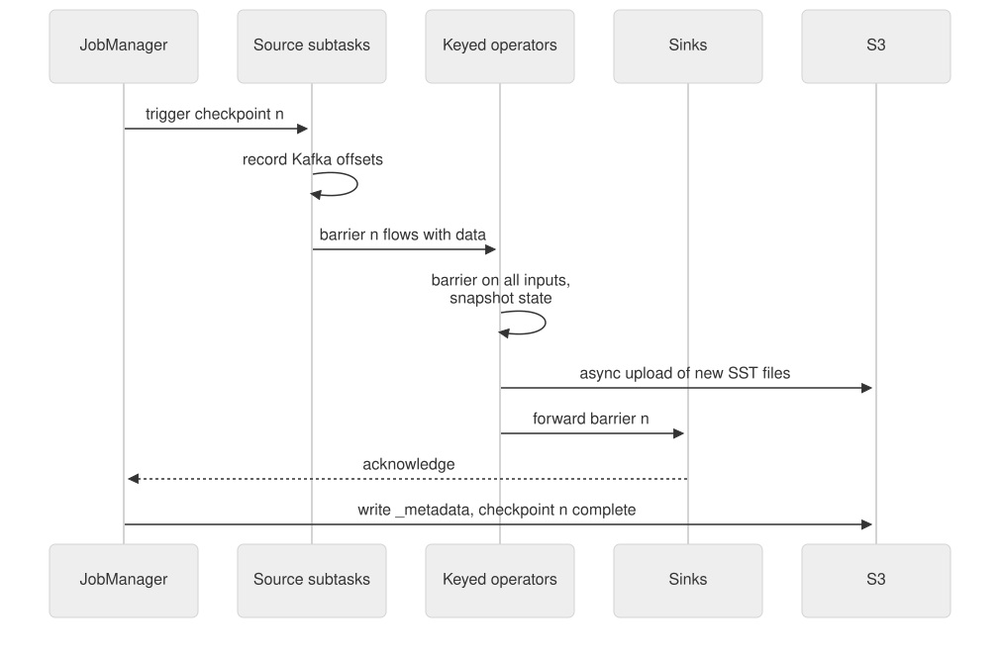
Configuration:
execution.checkpointing.interval: 10sexecution.checkpointing.mode: EXACTLY_ONCEexecution.checkpointing.timeout: 60sexecution.checkpointing.min-pause: 5sexecution.checkpointing.max-concurrent-checkpoints: 1execution.checkpointing.tolerable-failed-checkpoints: 3execution.checkpointing.unaligned.enabled: trueexecution.checkpointing.aligned-checkpoint-timeout: 5s # switch to unaligned only when alignment is slowexecution.checkpointing.externalized-checkpoint-retention: RETAIN_ON_CANCELLATIONstate.backend.type: rocksdbstate.backend.incremental: truestate.checkpoints.dir: s3://stream-platform/checkpoints/activity-pipelinestate.checkpoints.num-retained: 3| Layer | Guarantee | Mechanism |
|---|---|---|
| Kafka → Flink state | Exactly-once | Offsets and state in the same checkpoint |
| Flink → output topics | At-least-once | Records after the last checkpoint re-emitted after recovery |
| Output topics → Redis / PostgreSQL | Effectively-once state | Absolute values + monotonic guards (as_of_event_time_ms, fire_seq) |
Recomputation is deterministic: the same events in the same per-partition order produce the same state and outputs. Window firing times depend on cross-partition interleaving and can vary slightly, but because every output is the full current value of its key and writes are monotonic, stored state converges.
| Rule | Consequence |
|---|---|
| A partition is read by one source subtask at a time | Source parallelism > partitions → idle subtasks |
| Partitions are spread over source subtasks | 24 / 12 = 2 each (even); 6 / 4 = 2, 2, 1, 1 (uneven) |
keyBy redistributes by key group |
Keyed load depends on key distribution, not partitions |
| Max parallelism (256) fixes key groups forever | Keyed operators can rescale up to 256 |
| Key groups per subtask = 256 / parallelism | 256 / 12 → 21 or 22 (~5% imbalance) |
OffsetsInitializer.timestamp(T) , choosing T about 1 hour before the period of interest so dedup and feature state are warm; record the run in replay_runs; horizon 7 days.detection + restart + state restore + backlog drain, with drain = backlog / (catch_up_rate − input_rate) (Section 21.3).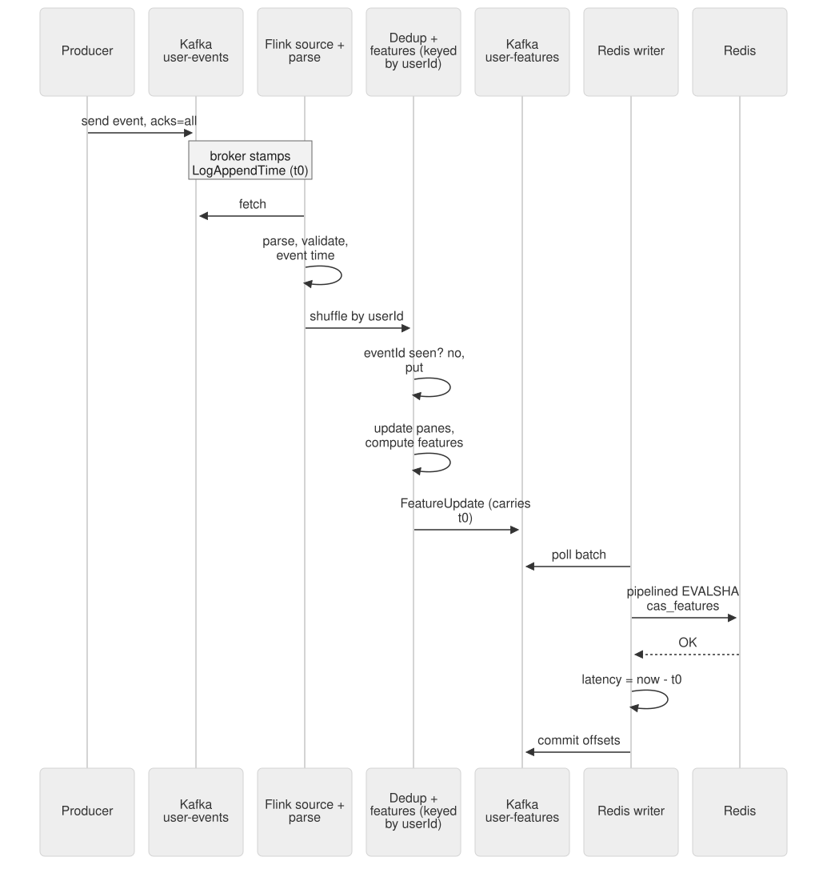
Dedup and the feature function run in the same subtask (the stream is reinterpreted as keyed, with no second shuffle), so they are drawn as one participant.
userId (acks=all). The broker appends it to partition murmur2(userId) % 24 , stamps LogAppendTime, replicates to 2 in-sync followers, and acknowledges.fetch.max.wait.ms=50 ).ObjectMapper parses JSON; failures go to the DLQ side output.eventTime; the partition's watermark tracker updates.keyBy(userId) sends the record to the subtask owning the user's key group.MapState.contains(eventId) ; if new, put and forward.FeatureUpdate to user-features.productId to the window operator and added to the minute accumulator.ProductMetric with fire_seq = 1 goes to product-metrics.| Segment | Typical | Main knob |
|---|---|---|
| Broker append + replication | 2–10 ms | Broker load, AZ latency |
| Source fetch wait | 0–50 ms | fetch.max.wait.ms |
| Parse + watermark (chained) | < 1 ms | — |
| Shuffle to dedup | 0–20 ms | execution. (20 ms) |
| Dedup + feature state access | 0.05–0.5 ms | Block cache |
| Kafka sink batching | 0–10 ms | linger.ms=10 |
| Broker append of output | 2–10 ms | — |
| Writer poll + batch | 0–100 ms | Poll wait, batch size |
| Redis pipelined write | 1–3 ms | Batch size |
| Total (healthy) | ~50–250 ms | |
| During checkpoint alignment | + tens to hundreds of ms | Unaligned fallback |
eventId; both copies land on the same partition.seen.contains(eventId) and is dropped; duplicates_total increments.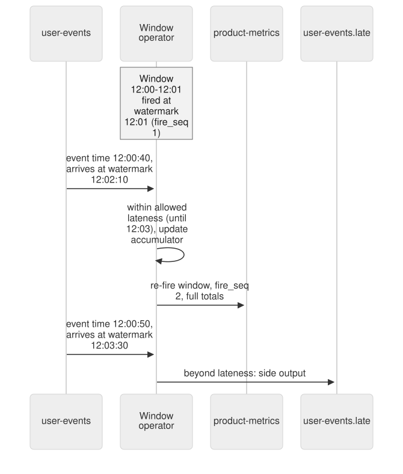
The feature path handles the same event independently: counted if it fits the user's pane range, otherwise counted as a late feature event and skipped.
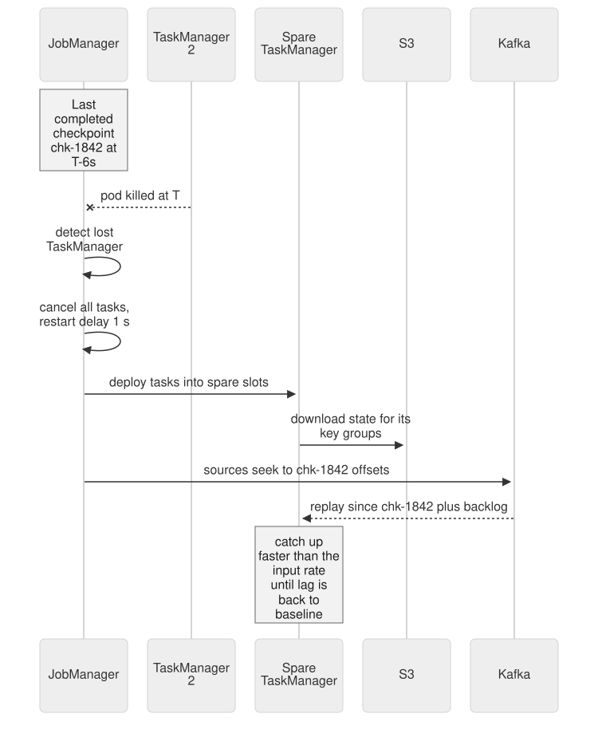
keyBy makes the graph all-to-all, so the failover region is the whole job; all tasks are cancelled.user-features lag grows; Flink is unaffected.commitSync: rebalance; another replica re-applies the batch; the upsert writes the same totals or is skipped by fire_seq.ADD_TO_CART undercounted for 3 hours): deploy the fixed job from T = bug start − 1 h; recomputed rows and features overwrite; record in replay_runs.| Potential race | Where | Why it cannot happen (or is harmless) |
|---|---|---|
| Two threads updating one user's state | Flink keyed operators | One key → one key group → one subtask → one thread |
| Two writers updating one Redis key | Redis writers | Same key → same partition → one consumer; rebalance overlap is safe because the Lua CAS is atomic and monotonic |
| Two writers upserting one PostgreSQL row | PG writers | Same partitioning argument; the upsert is atomic per row |
| Stale replayed output overwriting fresh output | Sinks after recovery or replay | Monotonic guards |
| Offsets committed before writes | Writers | Commit only after success |
HSET of a replayed older feature would be a lost update; the CAS prevents it.fire_seq guard prevents it.| Operation | Atomic? |
|---|---|
| Checkpoint (offsets + all state) | Yes, as a consistent cut; completes or is discarded |
| A writer batch to PostgreSQL | Yes (one transaction) |
| A writer batch to Redis | No (independent scripts); each key's update is atomic; partial batches are re-applied on redelivery |
| Write + offset commit | No; safe because of idempotency |
| Scope | Guaranteed? |
|---|---|
| One user's events within a Kafka partition | Yes (offset order) |
One user's events through Flink after keyBy |
Yes (one partition → one source subtask → one keyed subtask) |
| Across users or partitions | No |
| Event-time order | No (arrival ≠ event time; watermarks and panes handle it) |
Feature updates per user in user-features |
Yes, and the CAS enforces monotonicity anyway |
| Window results per product | Yes per key; fire_seq enforces it in the sink |
| Guarantee | Holds? | Notes |
|---|---|---|
| Each event affects Flink state exactly once | Yes | Checkpoints + rewind |
| No acknowledged event lost | Yes | RF=3, acks=all, ISR=2, 7-day retention |
| Output records delivered exactly once | No | At-least-once sink |
| Stored results equal exactly-once results | Yes, after convergence | Idempotent absolute writes + monotonic guards |
| Duplicates removed | Within 15 min | Not beyond |
| Window results final at first firing | No | Late re-firings within 2 min |
| Events later than allowed lateness counted | No | Routed to the late topic |
| Redis consistent with PostgreSQL | No | Independent outputs with different timing |
| Read-your-writes for producers | No | Asynchronous pipeline |
| Source | Removed by |
|---|---|
Producer application retries (same eventId) |
Flink dedup (15 min) |
| Producer internal retries | Kafka idempotent producer |
| Flink recovery replay | State rollback; re-emitted outputs absorbed by idempotent sinks |
| Writer redelivery | Idempotent writes |
| Operational replay | Overwrite semantics |
min.insync.replicas=2 survives one broker loss.t_visible − eventTime ) includes device and network delays outside the platform's control. Processing-time latency (t_visible − t_kafka_append ) is the resume metric.| Failure scenario | Why it happens | System behaviour | Recovery mechanism | Remaining risk |
|---|---|---|---|---|
| TaskManager crash | Pod/node failure | Cancel the job region; restart strategy | Restore from the last checkpoint into spare + surviving slots; replay from checkpointed offsets | Outputs since the checkpoint re-emitted (absorbed); RTO depends on spare and headroom |
| JobManager crash | Pod failure | New leader reads latest checkpoint pointer | Job restored from checkpoint | Pod restart may exceed 30 s |
| Checkpoint failures | S3 throttling, alignment timeouts | Continue up to 3 consecutive failures, then fail the job | Restart from last good checkpoint | More replay after recovery |
| Kafka broker failure | Broker loss | Leader election; clients fail over | Automatic | None (RF=3, ISR=2) |
| Kafka cluster unavailable | Outage | Source retries; job may fail; producers buffer then block/fail | Restart from checkpoint when Kafka returns | Producers must retry |
| Duplicate events | Producer retries | Dedup drops them | — | Not beyond 15 min |
| Late events | Device buffering, network | Re-fire (≤ 2 min) or late side output | Optional correction job (out of scope) | Analytics excludes very late events |
| Malformed events | Producer bug | DLQ | Fix producer; replay corrected events | Missing until replayed |
| Redis unavailable | Failover, outage | Writers retry, don't commit; lag grows | Drain when Redis returns | Stale features during outage |
| PostgreSQL unavailable | Failover, outage | Same | Same | Stale analytics |
| Writer crash | Pod failure | Group rebalance | Redelivery from committed offsets | None (idempotent) |
| TM–JM network partition | Network | Heartbeat timeout; TM considered lost | As a TaskManager crash | None |
| Partial Redis batch | Writer crash mid-batch | Some keys updated, offsets not committed | Redelivery re-applies all | None |
| Hot key / skew | Bots, flash sales | One subtask busy; backpressure; lag | Rescale, salting (future) | Latency |
| State too large / disk full | TTL not cleaning, growth | Task failures | Bigger volume; tune TTL | Recovery via checkpoint |
| Poison output record | Bad record | Bisect batch; writer DLQ after 3 attempts | Manual | That record missing from the store |
keyBy connections); all tasks are cancelled.Replay (Section 9.9): precondition that the start is within Kafka retention and operator uids are stable (or state is intentionally fresh). Audit in replay_runs.
Upgrade:
upgradeMode: savepoint ).SIGTERM: stop polling, finish the in-flight batch, commit offsets, close the consumer (an immediate, clean rebalance instead of waiting for the session timeout).Guaranteed: exactly-once state; no acknowledged event lost; stored results converge to exactly-once results. Not guaranteed: exactly-once output delivery; dedup beyond 15 minutes; final results at first firing; inclusion of events beyond 2 minutes of lateness; cross-store consistency. See Section 11.5.
| Area | Bottleneck | Symptom |
|---|---|---|
| Source | Too few partitions; uneven partitions per subtask | Some source subtasks busy, others idle |
| Serialization | Kryo fallback; JSON parsing | CPU in KryoSerializer / Jackson |
| Network shuffles | Buffers flushed too often or too rarely | Throughput vs latency trade-off |
| State access | RocksDB reads/writes; block cache misses | Busy keyed operators |
| Key skew | Hot users or products | One subtask at 1000 ms/s busy |
| Sinks | Synchronous per-record writes | Writer lag |
| Checkpoints | Large or slow uploads; alignment under backpressure | Duration near the interval; latency spikes |
| GC | Large heap objects | Latency spikes |
| Operator | Cost |
|---|---|
| Parse | O(event bytes) |
| Dedup | O(1) RocksDB get + put |
| Features | O(P), P ≤ 12, plus 3 RocksDB reads/writes |
| Window | O(1) accumulator update |
| Sinks | O(1) amortized with batching |
No superlinear algorithms exist; throughput is governed by constant factors (serialization, state, network) and parallelism.
OPT-1: Partition count aligned with parallelism.
numRecordsInPerSecond , busyTimeMsPerSecond ; per-partition lag.OPT-2: Parallelism sized to the bottleneck, max parallelism set explicitly.
maxParallelism = 256 before the first deployment. Cost: more resources; all-to-all channels grow as p²; ~5% key-group imbalance.OPT-3: Eliminate Kryo and reuse parsers.
eventTimeMs as long; disableGenericTypes() fails fast on Kryo; one shared thread-safe ObjectMapper.OPT-4: Avoid a redundant shuffle.
reinterpretAsKeyedStream after dedup instead of a second keyBy(userId). Each shuffle costs serialization, buffers, and deserialization per record.OPT-5: Batching at the edges.
linger.ms=10, 64 KB batches, lz4; writers use pipelined Lua (500 per round trip) and JDBC batches of 500. Cost: up to linger.ms + poll interval of added latency.OPT-6: Latency-oriented network buffer timeout.
execution.buffer-timeout: 20 ms (default 100 ms) with buffer debloating. At moderate per-channel rates the default alone can add up to ~100 ms per shuffle hop. Cost: slightly lower max throughput.OPT-7: RocksDB tuning.
FLASH_SSD_OPTIMIZED ; local SSD for working directories; state latency tracking.keyBy.Status: intended plan only. None of these tests or benchmarks has been executed; result tables are blank; no number here is a measurement.
| Test | Objective | Expected / assertion |
|---|---|---|
Unit: PaneRing |
Correct sliding sums and expiry | Sums equal a brute-force reference; too-old events rejected |
| Unit: dedup function | Duplicates dropped within TTL | Same eventId twice → 1 output; after advancing processing time 16 min → 2 |
| Unit: window function | fire_seq and late handling |
Outputs fire_seq 1 then 2; beyond-lateness event on side output |
| Unit: parser | Never throws | Valid → event; others → DLQ with correct reason |
| Integration: MiniCluster pipeline | Topology correctness | 100K generated events match the reference aggregates |
| Integration: writers | Idempotent sinks | Same records twice, out of order → newest values, no double counts |
| Contract: schemas | Producers and consumers agree | JSON Schema validation in CI |
| Database | Constraints and upsert guard | CHECK violations rejected; lower fire_seq does not overwrite |
| Concurrency: writer rebalance | No lost or double writes when scaling 2 → 4 | Final store equals expected |
| Failure injection: TaskManager kill | Exactly-once state across failure | Final aggregates equal the no-failure run |
| Failure injection: S3 outage (2 min) | Tolerable failures then recovery | ≤ 3 failed checkpoints or restart from the last good one |
| Recovery timing | < 30 s RTO | 3 kills at random checkpoint offsets, each < 30 s |
| Replay correctness | Replay reproduces results | Shadow schema equals original |
| Stress / load / soak | 2× capacity; claim; 6 h stability | No crash; thresholds; checkpoint size plateaus |
The most persuasive test is the failure-injection comparison: identical deterministic input with and without a TaskManager kill must produce identical final aggregates.
| Parameter | Value |
|---|---|
| Event mix | 70% VIEW, 20% CLICK, 8% ADD_TO_CART, 2% PURCHASE |
| Users | 500K active in the hour; Zipf(0.8) activity |
| Products | 50K; Zipf(1.0) popularity |
| Payload | ~300 B JSON |
| Duplicates | 1% re-sent with the same eventId within 0–60 s |
| Out-of-order | Jitter 0–3 s for 95%; 0–60 s for 4.9% |
| Late | 0.1% with event time 3–10 min behind |
| Rate | Constant 10K events/s (claim run); step ramps for capacity |
| Warm-up / steady / runs | 5 min / 30 min / 3 |
Tools: custom event-generator (real event semantics), Kafka perf tools (prove Kafka is not the bottleneck), Flink metrics in Prometheus/Grafana, Kafka lag, the writer latency histogram, and a batch reference job for correctness. HTTP load tools are not used (no HTTP API).
| # | Scenario | Purpose |
|---|---|---|
| E1 | 10K events/s, 30 min, optimized | Throughput + latency claims (stable lag, p95 < 1 s, zero restarts) |
| E2 | Step ramp 4K → 20K (+2K every 5 min), baseline and optimized | ~2× max sustainable throughput |
| E3 | Kill a TaskManager at minute 15 | < 30 s recovery; no lost or duplicated counts |
| E4 | Kill the JobManager | HA behaviour (not part of the claim) |
| E5 | Slow or paused Redis | Backpressure contained in writer lag |
| E6 | Replay 1 h with fresh state | Replay rate and correctness |
| E7 | Duplicates, jitter, late events | Metrics equal the batch reference for windows within lateness |
| E8 | 10 bot users at 5% of events; one product with 20% of views | Skew impact |
| E9 | Redis writers 1 → 2 → 4 → 6 at 15K updates/s | Consumer-group scaling |
| E10 | 8K events/s for 6 h | State growth, checkpoint size, drift |
| Aspect | Baseline | Optimized |
|---|---|---|
user-events partitions |
6 | 24 |
| Parallelism | 4 | 12 |
| Max parallelism | Default (128) | 256 |
| Serialization | Kryo fallback | POJO; generic types disabled |
| Dedup → features | Two shuffles | One + reinterpret |
| Kafka sink | linger.ms=0, no compression |
linger.ms=10, lz4 |
| Writers | Per-record synchronous | Pipelined / batched |
| Buffer timeout | 100 ms | 20 ms |
| Held constant | Hardware, TaskManager count/size, workload, Flink version, state backend, checkpoint interval |
Rules: same node group and MSK cluster (topics re-created per run); same generator seed; 3 runs, median and spread; ablation reverting one change at a time.
Ingestion rate; processing throughput (source num, valid only at stable lag); consumer lag; processing latency p50/p95/p99 (writer histogram: Redis-ack time − sourceIngestTs); window emission delay; busy/backpressured time; checkpoint duration/size/alignment; restart and recovery time; CPU/memory per TaskManager; duplicates/DLQ/late counts; sink health; writer error rate.
| Image | Base | Contents |
|---|---|---|
activity-pipeline |
flink:1.20-java17 |
Job JAR in /opt/flink/usrlib/; S3 filesystem plugin |
result-writer |
eclipse- |
Fat JAR; non-root user |
event-generator |
eclipse- |
Fat JAR |
| Resource | Purpose |
|---|---|
| Flink Kubernetes Operator (Helm) | Manages FlinkDeployment resources, savepoints, upgrades |
Flink |
Application-mode job: JobManager + TaskManagers |
Deployment result-, result-writer-pg |
Writer consumer groups |
Job event- |
Benchmarks and tests |
Config, writer-config |
Topics, bootstrap servers, tuning |
Secret writer- |
Redis auth token, PostgreSQL password |
Service with IRSA |
S3 access without static keys |
PodDisruptionBudget for writers |
minAvailable: 1 |
ServiceMonitors |
Prometheus scraping |
Representative FlinkDeployment:
apiVersion: flink.apache.org/v1beta1kind: FlinkDeploymentmetadata: name: activity-pipeline namespace: streamspec: image: <account>.dkr.ecr.<region>.amazonaws.com/activity-pipeline:1.4.0 flinkVersion: v1_20 serviceAccount: flink flinkConfiguration: taskmanager.numberOfTaskSlots: "4" parallelism.default: "12" pipeline.max-parallelism: "256" execution.checkpointing.interval: "10s" execution.checkpointing.unaligned.enabled: "true" execution.checkpointing.aligned-checkpoint-timeout: "5s" state.backend.type: rocksdb state.backend.incremental: "true" state.backend.local-recovery: "true" state.checkpoints.dir: s3://stream-platform/checkpoints/activity-pipeline state.savepoints.dir: s3://stream-platform/savepoints high-availability.type: kubernetes high-availability.storageDir: s3://stream-platform/ha heartbeat.timeout: "10000" restart-strategy.type: exponential-delay restart-strategy.exponential-delay.initial-backoff: 1s restart-strategy.exponential-delay.max-backoff: 60s slotmanager.redundant-taskmanager-num: "1" execution.buffer-timeout: 20ms metrics.reporter.prom.factory.class: org.apache.flink.metrics.prometheus.PrometheusReporterFactory metrics.reporter.prom.port: "9249" jobManager: resource: { memory: "2048m", cpu: 1 } taskManager: resource: { memory: "8192m", cpu: 4 } job: jarURI: local:///opt/flink/usrlib/activity-pipeline.jar parallelism: 12 upgradeMode: savepoint state: runningslotmanager. keeps one extra TaskManager's worth of slots allocated: the spare TaskManager of the recovery budget.
Representative writer Deployment:
apiVersion: apps/v1kind: Deploymentmetadata: { name: result-writer-redis, namespace: stream }spec: replicas: 3 selector: { matchLabels: { app: result-writer, sink: redis } } template: metadata: { labels: { app: result-writer, sink: redis } } spec: terminationGracePeriodSeconds: 30 containers: - name: writer image: <ecr>/result-writer:1.4.0 args: ["--mode=redis", "--topic=user-features", "--group=features-redis-writer"] envFrom: [{ configMapRef: { name: writer-config } }, { secretRef: { name: writer-secrets } }] readinessProbe: { httpGet: { path: /health/ready, port: 8080 }, periodSeconds: 10 } livenessProbe: { httpGet: { path: /health/live, port: 8080 }, periodSeconds: 15 } resources: requests: { cpu: 500m, memory: 768Mi } limits: { cpu: "1", memory: 768Mi }| Setting | Where |
|---|---|
| Kafka bootstrap (MSK TLS endpoint), topic names | ConfigMap |
| Redis endpoint (TLS on) | ConfigMap |
| Redis AUTH token, PostgreSQL credentials | Secret (from AWS Secrets Manager via the deploy pipeline) |
| S3 access | IRSA role on the flink ServiceAccount |
| Component | Readiness | Liveness |
|---|---|---|
| Flink JobManager | Operator-managed | Operator-managed |
| Flink job | Operator job.state; alerts on restarts and failed checkpoints |
— |
result-writer |
Assigned partitions and a successful write within 60 s | Poll-loop heartbeat within 30 s (no dependency on Redis/PostgreSQL) |
Resources: TaskManagers 4 vCPU / 8 GiB with RocksDB on EBS gp3 or instance store; writers scaled manually or with a CPU HPA (lag-based autoscaling with KEDA is a future improvement). Graceful shutdown: stop-with-savepoint for Flink; clean commit-and-close for writers.
| Service | Configuration | Reason |
|---|---|---|
| EKS | Node groups flink, apps, ops |
Isolate benchmark load from monitoring |
| MSK | 3 brokers across 3 AZs, TLS, IAM or SASL/SCRAM | RF=3 with AZ fault tolerance |
| ElastiCache Redis | Primary + replica, Multi-AZ failover, in-transit encryption | Serving availability |
| RDS PostgreSQL | Multi-AZ, gp3, Performance Insights | Durability; query visibility |
| S3 | Versioning off for checkpoints; lifecycle deletes old savepoints after 30 days | Cost |
| IAM | IRSA roles scoped to the bucket prefix | Least privilege |
| Cost control | Scale node groups to 0 and stop RDS outside test windows | Individual project budget |
JSON logs with job, operator, subtask, checkpointId (Flink) and topic, partition, offset, batchSize, latencyMs (writers). DLQ records include source partition and offset as correlation ids. eventId is the end-to-end correlation key for a single event.
| Metric | Source | Why it matters |
|---|---|---|
num / num per operator |
Flink | Throughput; where records drop |
pendingRecords (source backlog) |
Flink Kafka source | Lag: the primary health signal |
busyTimeMsPerSecond, back, idleTimeMsPerSecond |
Flink | Bottleneck identification |
current, watermark lag |
Flink | Event-time progress; stuck partitions |
last, lastCheckpointSize, number, checkpoint |
Flink | Checkpoint health, recovery cost |
numRestarts, fullRestarts, uptime |
Flink | Stability |
duplicates_, dlq_, late_ |
Custom | Data quality |
writer_ |
Writer | p50/p95/p99 processing latency |
writer_batch_size, writer_, writer_ |
Writer | Sink health |
kafka_ |
Kafka exporter / MSK | Writer lag |
Redis ops/latency; RDS CPU, xact_commit |
CloudWatch / exporters | Dependency health |
| JVM GC pause, heap | Flink / writers | Latency spikes |
Dashboards: pipeline overview (ingest vs processing rate, lag, p95/p99, restarts, DLQ/late/duplicate rates); operator detail (busy/backpressure heatmap, watermarks); checkpoints; sinks; recovery view (status timeline, lag spike and drain).
| Alert | Condition | Action |
|---|---|---|
| SourceLagGrowing | Lag derivative > 0 and lag > 100K for 10 min | Capacity or bottleneck investigation |
| LatencySLO | p95 > 1 s for 10 min | Check backpressure, checkpoints, writers |
| CheckpointFailing | ≥ 2 failed checkpoints in 15 min | Check S3, alignment, state size |
| JobRestarting | Any restart in 10 min | Inspect exceptions |
| WatermarkStalled | Watermark lag > 5 min | Idle/stuck partition or future timestamps |
| WriterLag | Writer lag > 50K for 10 min | Scale writers or check the store |
| DLQSpike | DLQ > 0.5% of input for 5 min | Producer bug |
| Symptom | First check | Likely cause | Action |
|---|---|---|---|
| Source lag growing | Busy/backpressured per operator | Bottleneck operator or skew | Find the busy-but-not-backpressured operator; scale or fix skew |
| One subtask at 1000 ms/s | Key distribution | Hot user or product | Filter bots; pre-aggregate; plan salting |
| Latency spikes every ~10 s | Checkpoint alignment time | Alignment under backpressure | Check unaligned fallback; fix backpressure |
| Windows not firing | Watermark lag | Stalled partition or future timestamps | Check idleness, DLQ FUTURE_TIMESTAMP |
| Writer lag, Flink healthy | Redis/RDS health, writer failures | Store slow or down | Scale writers or fix the store; nothing is lost |
| Counts too high | Duplicates counter | Retries beyond 15 min | Confirm against dedup horizon |
| Job restart loop | Exceptions, DLQ | Throwing user code | Fix and redeploy from savepoint |
Trace one event by its eventId across logs, or a DLQ record back to its source partition and offset.
This is a speaking script for explaining the whole project continuously in about 30 minutes. Each segment has what to say (written to be spoken aloud), the technical details behind the words, the diagram to draw, the points you must not forget, the most likely interruption, and a transition into the next segment.
Honesty rule for the whole talk: the four resume figures (10K+ events/sec, < 1 s p95 latency, < 30 s recovery, ~2× throughput) are benchmark targets, not measured results, and nothing in the design has been deployed or run. Say so the first time you mention a number.
| Time | Segment |
|---|---|
| 0–2 min | 1. Problem statement and motivation |
| 2–5 min | 2. Requirements, scope, and technology stack |
| 5–10 min | 3. High-level design and architecture |
| 10–15 min | 4. Low-level design: the Flink job and the writers |
| 15–19 min | 5. Core algorithms: time, windows, dedup, checkpoints |
| 19–23 min | 6. Message contracts, storage, concurrency, and consistency |
| 23–26 min | 7. Failure handling, recovery, and replay |
| 26–28 min | 8. Performance engineering and benchmarking |
| 28–30 min | 9. Trade-offs, limitations, and future improvements |
What to say:
"This is a real-time streaming platform for an e-commerce application. The app emits user-activity events: product views, clicks, add-to-cart, and purchases. Two consumers need them processed within about a second.
The first is online features for ML models, like recommendation or fraud. A model asks, per request, 'how many products has this user viewed in the last 5 minutes?' or 'how much has this user spent in the last hour?', and needs fresh answers in single-digit milliseconds. The second is real-time product analytics: views, clicks, cart-adds, purchases, and revenue per product per minute, queryable with SQL by dashboards.
What makes it hard is that real event streams are messy. Events arrive out of order, because mobile clients buffer and networks delay. Some arrive twice, because producers retry. Volume is bursty. And machines fail. The platform has to keep results correct anyway: no losing events, no double-counting, and keep up at 10,000 or more events per second."
Technical details to understand:
eventId.Diagram to draw: a timeline showing an event at 12:00:59 that arrives at 12:01:03, to make "out of order" concrete.
Key points to remember:
Likely interruption: "Do you build the ML model too?" No. The model, its serving service, an offline feature store, and the dashboard UI are out of scope. The platform ends at the Redis keys and PostgreSQL rows it writes.
Transition: "Here is exactly what the platform must do and what I built it with."
What to say:
"Functionally: ingest JSON events into a Kafka topic user-events, keyed by user id. Validate them and send malformed ones to a dead-letter topic without stopping. Assign event time from the event's own timestamp, with watermarks that tolerate 5 seconds of disorder. Deduplicate by event id within 15 minutes. Maintain per-user sliding-window features updated on every event. Compute 1-minute tumbling-window product metrics, with 2 minutes of allowed lateness, sending later events to a late topic. Serve features from Redis with updates that never go backwards. Store metrics in PostgreSQL idempotently, so re-emitted windows overwrite rather than double count. Recover automatically from failures. Support operator-triggered replay from a timestamp. And scale the sink writers through Kafka consumer groups.
Non-functionally, the targets are 10,000 events per second with bounded lag, p95 under one second from Kafka append to the feature being visible in Redis, recovery under 30 seconds after a TaskManager failure, and about 2× the throughput of an unoptimized partitioning baseline. These are benchmark targets. The correctness requirements are design requirements: exactly-once state, effectively-once results, no acknowledged event lost, and a 7-day replay horizon.
The stack: Kafka on Amazon MSK, because it's a durable, partitioned, replayable log. Apache Flink 1.20, because it does true event-time processing with watermarks, keyed state in RocksDB, exactly-once checkpoints, and credit-based backpressure. Redis on ElastiCache for sub-millisecond feature reads with Lua compare-and-set. PostgreSQL on RDS for SQL analytics with upserts. S3 for checkpoints. Kubernetes on EKS with the Flink Kubernetes Operator. Prometheus and Grafana for monitoring. All in Java 17."
Technical details to understand:
acks=all, min.insync.replicas=2 , 7-day retention on user-events.Diagram to draw: skip, or a list "inputs: user-events / outputs: Redis features, PostgreSQL metrics".
Key points to remember:
Likely interruption: "Why not Kafka Streams?" It's a good library, but parallelism is tied to partitions and recovery replays changelog topics. Flink gives richer event-time windows, independent parallelism, and fast incremental checkpoints to S3.
Transition: "Let me draw the architecture end to end."
What to say:
"Events enter one Kafka topic, user-events, with 24 partitions, keyed by user id, retained for 7 days. That topic is the source of truth: everything downstream can be recomputed from it.
One Flink job, activity-, runs with parallelism 12 on three TaskManagers of four slots each, plus one spare TaskManager. Inside the job: a Kafka source parses and validates events, sending bad ones to user-events.dlq; a watermark generator assigns event time; a dedup operator keyed by user drops repeated event ids; a user-feature function updates sliding-window features on every event; and, after a second shuffle by product id, a tumbling window computes per-product minute metrics, sending too-late events to user-.
Flink writes its two outputs to Kafka topics, user-features and product-metrics, 12 partitions each. A small Java application, result-writer, consumes those topics in two consumer groups: one writes features to Redis, the other writes metrics to PostgreSQL.
Why a Kafka hop between Flink and the databases? If Flink wrote directly to Redis and PostgreSQL, a slow database would backpressure the whole job and delay checkpoints, and scaling the sinks would mean rescaling Flink. With the hop, a slow database just becomes writer lag; writers scale independently up to the partition count; and the stores can be rebuilt by re-consuming the output topics without rerunning Flink. It costs one hop of a few tens of milliseconds against a one-second budget.
Checkpoints of all Flink state plus Kafka offsets go to S3 every 10 seconds. On AWS, everything runs in one region across three availability zones: EKS for compute, MSK with one broker per zone, ElastiCache with a replica, RDS Multi-AZ, and S3 accessed through IAM roles for service accounts."
Technical details to understand:
Diagram to draw: producers → user-events (24p) → Flink [source+parse → watermarks → dedup (keyBy user) → features; → keyBy product → windows] → user-features / product-metrics → writer groups → Redis / PostgreSQL; DLQ and late topics as side arrows; S3 checkpoints below Flink.
Key points to remember:
Likely interruption: "What's the source of truth?" Kafka user-events for 7 days. All Flink state and both stores are derived and can be recomputed by replay within that horizon.
Transition: "Let me go one level down into the job's operators and the writer."
What to say:
"The job is wired in one class. Source, parse, and watermark assignment are chained into one task, so there's no serialization between them. The deserializer never throws: a throwing deserializer would fail the task, the job would restart from the checkpoint, re-read the same bad record, and fail forever. Instead, failures become an invalid parse result and go to the DLQ side output.
Then keyBy(userId) shuffles events over the network so all events of one user reach the same subtask. Note that Kafka is already keyed by user, but Flink still has to shuffle, because Flink hashes keys into its own key groups, independently of Kafka's partitioner. The dedup operator and the feature operator use the same key, so after dedup I use reinterpret to avoid a second shuffle. Product metrics need key, which is a genuine second shuffle.
Every operator has an explicit uid. Savepoint state is matched to operators by uid, so without them, adding an operator could make state unrestorable during an upgrade.
The state is all keyed and lives in RocksDB: a map of seen event ids per user with a 15-minute TTL; two pane rings per user for the 5-minute and 1-hour windows; last activity; a cleanup timer; and window accumulators per product. ILLUSTRATIVE total: about 1 GB.
Threading in Flink is simple: one task thread per subtask, so keyed state is accessed single-threaded and needs no locks. The rule is never to block a task thread on external I/O; this job has no external lookups.
The result-writer is a plain consumer loop: poll up to 500 records, write the batch, then commit offsets synchronously, only after the write succeeds. It's one thread per replica because KafkaConsumer isn't thread-safe; scaling is adding replicas up to 12. On rebalance it flushes and commits before giving up partitions, using the cooperative-sticky assignor. A record that keeps failing is isolated by bisecting the batch and sent to a writer DLQ after 3 attempts."
Technical details to understand:
env.setMaxParallelism(256) is fixed for the life of the state; disableGenericTypes() fails fast on Kryo fallback; setBufferTimeout(20) trades a little throughput for latency.Diagram to draw: inside one TaskManager slot: [source → parse → watermark] chained → network shuffle by user key group → [dedup → features] → KafkaSink; dedup → shuffle by product → window → KafkaSink; side outputs to DLQ and late.
Key points to remember:
reinterpretAsKeyedStream removed the redundant one.Likely interruption: "When is reinterpret safe?" Only if the stream is partitioned exactly as keyBy on that key would partition it, which holds right after a keyed operator with the same key and a forward connection. Anywhere else it silently corrupts keyed state.
Transition: "Now the algorithms that give correct results despite disorder, duplicates, and failures."
What to say:
"First, event time and watermarks. A watermark is the job saying 'I don't expect more events at or before time t'. Each Kafka partition tracks its maximum event time, and its watermark is that maximum minus 5 seconds. An operator's watermark is the minimum across its inputs, so one slow partition holds everything back; that's why idle partitions are excluded after 30 seconds. When the watermark passes a window's end, the window fires.
Second, tumbling windows with lateness for product metrics. A minute window, say 12:00 to 12:01, fires when the watermark passes 12:01, emitting the full totals with fire_seq 1. A late event that arrives before the watermark passes 12:03 updates the accumulator and re-fires the window with fire_seq 2, again with full totals. After that, the window is purged and later events go to the late topic, so they're routed aside rather than silently dropped.
Third, pane-based sliding features. The model wants a fresh 'views in the last 5 minutes' on every event. Flink's sliding windows would only emit every slide, say every 30 seconds, and each event would update 10 overlapping windows. Instead I keep a ring of 10 panes of 30 seconds each in keyed state. An event increments its pane; the feature is the sum of panes within the last 5 minutes of the user's latest event time. That's O(panes) per event and constant memory per user. The approximation is that 'last 5 minutes' is really between 4.5 and 5 minutes.
Fourth, dedup: a keyed map of event id to event time with a 15-minute TTL, cleaned up by RocksDB's compaction filter. O(1) per event. Duplicates more than 15 minutes apart are not removed, which is documented.
Fifth, checkpointing, a variant of the Chandy-Lamport snapshot algorithm. Every 10 seconds the JobManager injects a numbered barrier into every source. Barriers flow with the data; an operator snapshots its state when the barrier has arrived on all its inputs, then forwards it. The checkpoint contains the Kafka offsets and all state at the same logical point. RocksDB snapshots are incremental, uploading only new files to S3. Under backpressure, aligning barriers can be slow, so after 5 seconds the checkpoint switches to unaligned, which snapshots the in-flight buffers instead of waiting."
Technical details to understand:
Diagram to draw: a timeline for one window: open → fires at watermark 12:01 (fire_seq 1) → late event re-fires (fire_seq 2) → purged at 12:03 → later events to the late topic. Then a barrier diagram: source → barrier n → operator snapshot → sink ack.
Key points to remember:
fire_seq orders firings.O(P) per event.Likely interruption: "What's barrier alignment and why can it hurt latency?" An operator with several inputs must buffer the faster ones until barrier n arrives on all of them. Under backpressure, barriers queue behind data, so alignment drags and buffered records wait. Unaligned checkpoints let barriers overtake the data.
Transition: "Exactly-once state is only half the story, because Redis and PostgreSQL are outside Flink. Here's how the outputs stay correct."
What to say:
"There's no public REST API. The contracts are Kafka topics, a Redis key schema, and a PostgreSQL table. Input events are JSON with schema version, event id, type, user id, product id, price in minor units, and an ISO event time. user-events uses broker-side LogAppendTime, so I have a trustworthy ingest timestamp for measuring latency that doesn't depend on client clocks.
I deliberately use an at-least-once Kafka sink, not the exactly-once transactional sink. The transactional sink only commits output when a checkpoint completes, so consumers would see results every 10 seconds or so, which breaks the one-second target. So outputs can be duplicated, and every downstream write is made idempotent and monotonic instead.
In Redis, each user has a hash feat:u:{userId} with a 2-hour TTL. The writer applies updates with a Lua compare-and-set: if the incoming as_ is older than the stored one, ignore it; otherwise write. Lua runs atomically, so there's no race. Equal timestamps are accepted, which makes a replayed identical update a harmless overwrite.
In PostgreSQL, product_ has primary key product id plus window start, is range-partitioned by day and dropped after 30 days, and the writer does a batched upsert of absolute window totals, guarded by WHERE EXCLUDED.. Absolute totals mean applying twice changes nothing; the guard stops an older firing from overwriting a newer one.
So the guarantee is: exactly-once state inside Flink, at-least-once delivery of outputs, and effectively-once results in the stores. Inside Flink there are no locks, because each key belongs to exactly one subtask. Between writer replicas, one partition belongs to one consumer at a time, and same key means same partition; during a brief rebalance overlap, the atomic monotonic writes prevent regressions.
What's not guaranteed: duplicates beyond 15 minutes, events later than the 2-minute lateness, finality of the first window firing, and consistency between Redis and PostgreSQL, which are independent read models."
Technical details to understand:
user-events and user-features by userId, product-metrics by productId; partition counts are chosen up front because adding partitions changes key placement.products (metrics can arrive before catalog sync); batches of 500 with reWriteBatchedInserts=true .Diagram to draw: the guarantee ladder: Kafka → Flink state (exactly-once) → output topics (at-least-once) → stores (effectively-once via CAS and guarded upsert).
Key points to remember:
as_of_event_time_ms ; PostgreSQL absolute totals + fire_seq guard.Likely interruption: "Your sink is at-least-once. How can you claim exactly-once?" I claim exactly-once state and effectively-once results. Output records can repeat, but every write is an idempotent, monotonic overwrite, so the stored state matches what an exactly-once pipeline would produce.
Transition: "Let me walk through what happens when things fail, and how replay works."
What to say:
"The main failure is a TaskManager dying. The JobManager notices quickly through the broken connection, or within the 10-second heartbeat timeout. Because keyBy connects every task to every other, the failover region is the whole job, so all tasks are cancelled. After a 1-second restart delay, the scheduler needs 12 slots: two healthy TaskManagers give 8 and the spare gives 4 immediately. Without the spare, Flink would wait for a new pod to be scheduled and started, which alone can take 15 to 60 seconds. Each subtask restores its key groups from the last completed checkpoint, using local recovery where possible and downloading from S3 otherwise. Sources rewind to the checkpoint offsets, events since then are reprocessed, re-emitted outputs are absorbed by the idempotent writers, and the backlog drains at the job's full speed.
Recovery time is detection, plus restart, plus restore, plus draining the backlog, where drain time is backlog divided by spare capacity. That's why throughput headroom is part of recovery engineering.
A JobManager failure uses Kubernetes HA: leader information in ConfigMaps and the latest checkpoint pointer in S3. A new JobManager restores from it, but the pod restart alone takes 10 to 30 seconds, so my 30-second claim is defined for TaskManager failures only.
If Redis fails over, writers retry without committing offsets; lag grows on user-features but Flink is untouched; when Redis returns, writers drain and the CAS applies updates monotonically. Malformed events go to the DLQ and can be republished after a fix. A writer crash between the database commit and the offset commit just leads to redelivery and an idempotent rewrite.
Finally, operational replay, for example after a bug that undercounted add-to-cart for 3 hours: deploy the fixed job reading from a timestamp about an hour before the bug, so dedup and feature state are warm, with watermark alignment keeping partitions in step; recomputed window totals overwrite the old rows, the Redis CAS stops replayed older features from overwriting newer ones, and the run is recorded in a replay_runs audit table. The horizon is Kafka's 7-day retention."
Technical details to understand:
upgradeMode: savepoint with stable uids; schema changes via POJO evolution or the State Processor API.Diagram to draw: the recovery timeline: kill → detect (≤ 10 s) → restart delay 1 s → slots from spare → restore from S3 → rewind offsets → drain backlog → lag back in band.
Key points to remember:
keyBy edges.Likely interruption: "Is recovery 'job RUNNING' or 'caught up'?" Caught up: lag back within its pre-failure band for 30 consecutive seconds. RUNNING alone would hide the drain time.
Transition: "That recovery budget depends on throughput headroom, which brings me to performance."
What to say:
"The 2× target comes from partitioning and parallelism. The baseline had 6 partitions read by 4 source subtasks, so the split was 2, 2, 1, 1: two subtasks each carried a third of the input and capped the job, and the keyed operators at parallelism 4 were saturated. The optimized job has 24 partitions over 12 subtasks, exactly 2 each, and max parallelism 256 set before the first deployment. On top of that, I removed Kryo serialization by using flat POJOs and disabling generic types, removed the redundant shuffle, batched writes at the edges, lowered the network buffer timeout to 20 milliseconds for latency, and tuned RocksDB.
I want to be honest that the baseline used 4 slots and the optimized job 12 on the same cluster, so part of the gain is simply using capacity the baseline couldn't. An ablation separates slot usage from per-record cost reductions; it's not a per-core efficiency claim.
For latency, a healthy event takes roughly 50 to 250 milliseconds end to end: broker append, fetch wait, one shuffle, RocksDB state access, a Kafka hop with 10-millisecond linger, the writer's poll, and a pipelined Redis write. Those are illustrative estimates; the rest of the one-second budget absorbs checkpoint alignment, GC, and bursts.
Measurement: throughput counts only when consumer lag stays flat over a 30-minute run after a 5-minute warm-up, because Kafka can ingest far more than Flink processes. Latency is measured from the broker's LogAppendTime to the Redis acknowledgement, merged across writer replicas from Prometheus histograms. Recovery is measured by killing a TaskManager at random points in the checkpoint interval, three times."
Technical details to understand:
busyTimeMsPerSecond and backPressuredTimeMsPerSecond : the bottleneck is the most downstream operator that is busy but not itself backpressured.Diagram to draw: baseline 6 partitions → 4 subtasks (2,2,1,1) next to optimized 24 → 12 (2 each).
Key points to remember:
Likely interruption: "Isn't 2× just more slots?" Partly, and I say so. The baseline couldn't use the cluster because of its partitioning. The ablation shows how much came from per-record cost reductions versus using more slots.
Transition: "I'll finish with the trade-offs I accepted and what I'd improve."
What to say:
"The defining trade-offs: event time gives deterministic, replayable results but results wait for watermarks and late events need a policy. Pane-based features give per-event freshness but approximate window boundaries. At-least-once output keeps latency under a second but forces every sink to be idempotent and monotonic. The Kafka hop isolates sinks at the cost of one more component. A spare TaskManager buys fast recovery at the cost of idle capacity. And PostgreSQL is fine at minute grain but isn't a columnar OLAP engine.
Documented limitations: late events beyond 2 minutes are excluded from analytics; features are counts and sums only; there's no offline feature store; dedup covers 15 minutes; partition counts are fixed up front; hot keys concentrate on one subtask; JobManager failover may exceed 30 seconds; single region; no schema registry; JSON parsing cost; and manual rescaling.
Future improvements, none implemented: a batch correction job for the late topic, HyperLogLog for distinct counts, sinking features to S3 for training, key salting for hot keys, a standby JobManager, cross-region replication, Avro or Protobuf with a schema registry, and the Flink operator's autoscaler plus KEDA for writers.
To summarize: Kafka is the replayable source of truth, Flink computes event-time results with exactly-once state, and idempotent, monotonic writers turn at-least-once outputs into correct stored results."
Technical details to understand:
as_of_event_time_ms .Diagram to draw: none; point back at the architecture.
Key points to remember:
Likely interruption: "What breaks first at 100K events/s?" Keyed RocksDB state access and JSON parsing, then shuffle network, then Redis writes for 100K feature updates per second. I'd scale parallelism and partitions, move to binary encoding, and throttle feature emissions per user.
Closing: "That's the full system. I'm happy to go deeper into watermarks, checkpoint recovery, or the sink idempotency."
How to practise: read each "What to say" block aloud with a timer, then redraw the diagram from memory while speaking. If you overrun, shorten Segments 2 and 8; never cut Segments 5 (time, windows, checkpoints) and 6 (sink idempotency).
These are the project's 45 existing questions and answers (15 easy, 15 medium, 15 hard), reproduced in full. "Hard Q8" and similar references point to questions in this section. Section numbers mentioned inside answers refer to the original project document; the same material is in this booklet (contracts in Section 7, algorithms in Section 9, failures in Section 12).
Ground rules for answering: the four resume figures are BENCHMARK TARGET / UNVERIFIED; configuration values are starting points; nothing has been run.
Answer:
user-events (24 partitions, keyed by userId, 7-day retention).eventId, and computes two outputs:
result-writer app (two consumer groups) writes Redis (online ML features) and PostgreSQL (analytics).Answer:
Answer:
eventTime). Processing time is when the job sees it.eventTime drives windows.LogAppendTime (stamped by the broker) is used only to measure processing latency, because client clocks can't be trusted.Answer:
watermark = max event time seen − 5 s − 1 ms .Answer:
| Tumbling: product metrics | Sliding: user features | |
|---|---|---|
| Shape | Fixed, non-overlapping minutes | "Last 5 minutes" / "last hour", rolling |
| Implementation | Flink Tumbling + incremental AggregateFunction |
Custom pane ring in a KeyedProcessFunction |
| Output | Once at window end (plus late re-firings) | On every event |
| Cost per event | 1 accumulator update | 1 pane update + an O(panes) sum |
SlidingEventTimeWindows(5 min, 30 s) would emit only every 30 s, and each event would update 10 overlapping windows.Answer:
Answer:
eventId, so the same event can land in Kafka twice.keyBy(userId), a DedupFunction keeps MapState<eventId, eventTime> per user with a 15-minute TTL:if (seen.contains(e.eventId)) { duplicates.inc(); return; }seen.put(e.eventId, e.eventTimeMs); out.collect(e);O(1), one RocksDB lookup and one put per event. State is about 1.2 KB per active user (ILLUSTRATIVE).userId: duplicates of an event always share a userId, and the features operator needs that shuffle anyway.Answer:
Answer:
result-writer do, and how does it scale?Answer:
features-redis-writer reads user-features and writes Redis with a Lua compare-and-set.metrics-pg-writer reads product-metrics and writes batched guarded upserts to PostgreSQL.poll (up to 500 records) → batch write → commitSync only after the write succeeds. A crash between write and commit means redelivery, and the idempotent rewrite makes it harmless.KafkaConsumer isn't thread-safe and per-partition offset tracking stays simple.Answer:
feat:u:{userId} with a 2-hour TTL, refreshed on every write, so inactive users expire on their own.as_of_event_time_ms .INSERT ... ON CONFLICT makes upserts idempotent.Answer:
eventTime more than 10 minutes in the future):
user-events.dlq, 14-day retention) with raw bytes, error code, partition, and offset.fire_seq + 1).user-events.late . It is excluded from analytics, but not silently dropped.user-events by userId, and why 24 partitions?Answer:
userId:
murmur2(key) % partitions , which breaks per-key ordering across the change (Hard Q7).Answer:
user-events for 7 days. Flink state, Redis, and PostgreSQL are all derived and can be recomputed.OffsetsInitializer.timestamp(T) .replay_runs.Answer:
LogAppendTime) to the feature being acknowledged in Redis. It covers the feature path only, since minute windows can't be sub-second by design.Answer:
max − 5 s − 1 ms every 200 ms (auto-watermark-interval ).fire_seq = 1.fire_seq = 2 and full totals.user-events.late .fire_seq work together?Answer:
fire_seq: ProductWindowFunction keeps a per-window ValueState<Integer> via context.windowState() . 1 means on time and >1 means a late re-firing. It is cleared in clear() when the window is purged.ON CONFLICT (product_id, window_start) DO UPDATE SET ... WHERE EXCLUDED.fire_seq >= t.fire_seq;Answer:
add(eventTime):
maxSeen − window , return false.slot = (start / paneMs) mod panes .sum(now): add up the panes whose start falls in (now − window, now] , where now = maxSeen, the user's latest event time, not wall clock.add, compute features, update lastActivity, reset a cleanup timer at maxSeen + 65 min, and emit a FeatureUpdate.O(P) per event (P = 10 or 12) plus 3 state reads and writes. Space is O(P × metrics) per user, independent of event rate, so bots can't blow up memory.Answer:
_metadata, and checkpoint n is complete.shared/.Answer:
| Layer | Guarantee |
|---|---|
| Kafka → Flink state | Exactly-once (offsets and state in one checkpoint) |
| Flink → output topics | At-least-once (records after the last checkpoint are re-emitted on recovery) |
| Output → stores | At-least-once delivery, effectively-once state |
local current = tonumber(redis.call('HGET', KEYS[1], 'as_of_event_time_ms') or '-1')if tonumber(ARGV[1]) < current then return 0 end -- stale: ignoreredis.call('HSET', KEYS[1], 'as_of_event_time_ms', ARGV[1], unpack(ARGV, 3))redis.call('EXPIRE', KEYS[1], tonumber(ARGV[2])); return 1>= semantics (equal is accepted) make an identical replayed update a harmless overwrite.fire_seq guard. 500 rows per batch, one transaction, then commitSync.Answer:
read_committed see the output only after that commit.DeliveryGuarantee.AT_LEAST_ONCE , with writers using read_uncommitted because there are no transactions upstream. Idempotent, monotonic writes give the same final state.eventId keying?Answer:
OnCreateAndWrite : the TTL starts at insert.NeverReturnExpired : expired entries are never visible.cleanupInRocksdbCompactFilter(1000) ), with no timers per entry.eventId: an extra shuffle and many tiny keys.Answer:
keyBy, partitions no longer matter. Key groups do. keyGroup = murmurHash(key.hashCode()) % maxParallelism , and each subtask owns a contiguous range of key groups.userId. Why does Flink still shuffle, and what does reinterpretAsKeyedStream save?Answer:
murmur2(keyBytes) % 24 , while Flink uses murmurHash(hashCode) % 256 to key groups, which are then assigned to subtasks. A partition's users don't map onto one subtask's key groups, so keyBy(userId) must shuffle after the source.keyBy(userId) → dedup.DataStreamUtils.reinterpretAsKeyedStream uses keyed state without a second shuffle (OPT-4 removed this redundant keyBy).keyBy(productId) → windows: a real second shuffle, because the key is different.reinterpretAsKeyedStream is safe: only if the stream is partitioned exactly as keyBy would partition it. That holds right after a keyed operator with the same key and a forward (chained) connection. Using it anywhere else silently corrupts keyed state.Answer:
loop: records = poll(max 500) write batch (Redis: pipelined EVALSHA | PG: one TX, reWriteBatchedInserts) on failure: retry with backoff 100 ms → 5 s, DON'T commit; after N failures → not ready commitSync(offsets of this batch)ConsumerRebalanceListener.onPartitionsRevoked flushes and commits before giving up partitions. The cooperative-sticky assignor avoids stop-the-world rebalances.SIGTERM): stop polling, finish the batch, commit, then close. The close triggers an immediate rebalance instead of waiting for the 45 s session timeout.<topic>.writer-dlq , and the rest proceed.Answer:
busyTimeMsPerSecond , backPressuredTimeMsPerSecond , and idleTimeMsPerSecond .disableGenericTypes() .kafka_consumergroup_lag on the writers, not as Flink backpressure.Answer:
| Segment (ILLUSTRATIVE) | Typical | Knob |
|---|---|---|
Broker append + replication (acks=all) |
2–10 ms | — |
| Source fetch wait | 0–50 ms | fetch.max.wait.ms=50 |
| Shuffle to dedup | 0–20 ms | execution. (default 100) |
| RocksDB state access | 0.05–0.5 ms | Block cache |
| Kafka sink batching | 0–10 ms | linger.ms=10 |
| Writer poll + batch | 0–100 ms | Batch size, poll wait |
| Redis pipelined write | 1–3 ms | — |
| Healthy total | ~50–250 ms |
LogAppendTime, which travels in the FeatureUpdate as sourceIngestTs. The writer records now − sourceIngestTs after Redis acks into a Prometheus histogram with buckets at 100, 250, 500, 750, 1000, and 1500 ms. Replicas are merged with histogram_quantile(0.95, sum by (le)(...)) .uid?Answer:
upgradeMode: savepoint on the FlinkDeployment, which stops with a savepoint.disableGenericTypes() helps here too: Kryo-serialized state is fragile to evolve. POJO serializers support evolution.Answer:
product_metrics_minute : a fact table at minute grain.
(product_id, window_start) , which serves the per-product time-series query (equality, then range).PARTITION BY RANGE (window_start) , daily partitions created ahead of time, dropped after 30 days. DROP TABLE is instant and leaves no vacuum debt, unlike a giant DELETE. Time filters also prune partitions.window_start for "top products in the last 15 minutes".fire_seq ≥ 1.products: metrics can arrive before the catalog sync, and an FK would make the writer fail on those rows. The join happens at query time.fire_seq guard, 500-row batches with reWriteBatchedInserts=true (multi-row INSERT), one transaction per batch.Answer:
| Optimization | Effect |
|---|---|
| OPT-1: 24 partitions (from 6), even 2-per-subtask | Removes the straggler source subtasks |
| OPT-2: parallelism 12 (from 4), max parallelism 256 | More subtasks share keyed RocksDB work |
OPT-3: flat POJOs, disable, shared ObjectMapper |
Removes Kryo fallback and mapper construction |
OPT-4: reinterpret |
One fewer network shuffle |
| OPT-5: batching at the edges | Kafka linger, 500-record Redis pipelines and JDBC batches |
| OPT-6: 20 ms buffer timeout | A latency lever (slightly lowers max throughput) |
| OPT-7: RocksDB tuning | Higher block-cache hit rate |
Answer:
RTO = detect + restart delay + slot allocation + state restore + backlog drain , where drain = backlog / (catch_up_rate − input_rate) .| Phase (ILLUSTRATIVE) | Estimate |
|---|---|
| Detection | 2–5 s (connection loss) up to 10 s (heartbeat., down from the 50 s default) |
| Restart delay | 1 s |
| Slots | ~1 s with a spare TaskManager (15–60 s without one) |
| Restore | ~3–6 s: about a third of ~1 GB of state downloaded from S3; the rest via local recovery |
| Backlog | 15–20 s × 10K/s = 150K–200K events |
| Drain | 20K/s capacity vs 10K/s input means a net 10K/s, so 15–20 s |
| Total | ≈ 22–33 s, achievable but tight |
Answer:
as_of_event_time_ms , not in the feature values:
asOf=100, views=1 .maxSeen stays 100, so asOf=100, views=2 . Same asOf.views=2. Then a failure happens, and the replay re-emits A's update (asOf=100, views=1 ). With >= it is accepted, so views drops to 1 until B's replayed update restores 2.(asOf, seq) lexicographically in Lua. That gives strictly monotonic updates.Answer:
FUTURE_TIMESTAMP ).withIdleness(30 s) .now − watermark) with a WatermarkStalled alert at more than 5 minutes, plus late_records_total{path} .userId, or a flash sale hits one product. What happens, and how do you fix it?Answer:
keyBy(productId) , so the hot key receives pre-summed partials.key#rand(0..k), aggregate, then merge by key. This only works for decomposable aggregates (counts and sums yes; the dedup set per user no).Answer:
asOf, and the CAS accepts it, so the gap closes within seconds.features-redis-writer group's offsets on user-features to T minus a margin (kafka-consumer-groups --reset-offsets --to-datetime ). The topic has 3-day retention.as_of against the latest offsets per user.Answer:
MapState TTL to 24 h. State grows with unique events per user in 24 h, not 15 minutes. With an ILLUSTRATIVE 96× more retained ids per active user, dedup state could go from about 0.6 GB to tens of GB. That means slower restores, which threatens the 30 s recovery target, plus more RocksDB I/O.MapState for 15 minutes (most retries happen fast), plus a compact per-user structure for the long tail (a set of 64-bit eventId hashes bucketed by hour, dropping whole buckets as they expire).eventId in an OLTP store.Answer:
murmur2(userId) % 48 maps most users to new partitions. Around the change, a user's older events sit in the old partition and newer ones in the new partition, so per-user order in Kafka breaks temporarily.user-features ordering, are briefly not guaranteed. The CAS guard limits the damage.user-events-v2 with 48 partitions, dual-write from producers, start a job version on v2 from a savepoint (aligning offsets by timestamp), then cut over.Answer:
lastCheckpointDuration , checkpointAlignmentTime , lastCheckpointSize , numberOfFailedCheckpoints , and S3 request errors.CheckpointFailing : 2 or more in 15 minutes).fire_seq guard always let corrected totals overwrite the old rows?Answer:
WHERE EXCLUDED.fire_seq >= t.fire_seq .fire_seq = 2 is stored. A replay with fresh state recomputes W. If its run sees no late arrival for W (different interleaving), it emits only fire_seq = 1, so the corrected total is rejected (1 < 2), and the bug-fixed value never lands.fire_seq reaches at least the stored one, which covers the common case of windows that never re-fired.run_epoch (pipeline version or replay id) to the row and guard on (run_epoch, fire_seq) lexicographically, so a newer run always wins.fire_seq state.Answer:
high-availability.type: kubernetes ) keeps the leader lease in ConfigMaps and the latest checkpoint pointer in S3.keyBy is an all-to-all connection, so every task is linked to every upstream task, and the region is the entire job.Answer:
acks=all and enable.idempotence=true (no duplicates from internal retries, order preserved with max.in.flight=5).min.insync.replicas=2 . An acked write exists on at least 2 brokers, so it survives one broker or AZ loss.acks=all writes are rejected (NotEnoughReplicas ). Producers buffer (buffer.memory), then block or fail (max.block.ms). This deliberately chooses consistency over availability: no write is acked that one more failure could lose.eventId, and dedup absorbs the duplicates.Answer:
as_of and values per user against the last expected update.fire_seq monotonic per row.duplicates_dropped_total matches the injected duplicates within 15 minutes.Answer:
views_5m = 14 written at 12:00 is still 14 at 12:30 until the next event or the 2-hour TTL. The model must check now − as_of_event_time_ms . If it is more than 5 minutes, treat the value as stale or zero. A model that ignores this gets a wrong signal.Answer:
user-events):
user-events-deduped , adding a Kafka hop and latency).Answer:
| Question | Likely follow-up | Where answered |
|---|---|---|
| Easy Q1 | "Do you build the model too?" | Section 3.5 |
| Easy Q2 | "Why not Kafka Streams?" | Easy Q2 |
| Easy Q3 | "Which timestamp measures latency?" | Easy Q3 (LogAppendTime) |
| Easy Q4 | "What if one partition stops?" | Hard Q3 |
| Easy Q5 | "Why not Flink's sliding windows?" | Easy Q5, Medium Q3 |
| Easy Q6 | "What is barrier alignment?" | Medium Q4 |
| Easy Q7 | "What happens to dedup state on recovery?" | Medium Q7 |
| Easy Q8 | "How do you find the bottleneck?" | Medium Q11 |
| Easy Q9 | "What does the extra hop cost?" | Easy Q9 |
| Easy Q10 | "Does Flink's source use consumer groups?" | Easy Q10 (precision note) |
| Easy Q11 | "Can Redis and PostgreSQL disagree?" | Easy Q11, Hard Q13 |
| Easy Q12 | "Why must the deserializer never throw?" | Easy Q12 |
| Easy Q13 | "What if you add partitions later?" | Hard Q7 |
| Easy Q14 | "How far back can you replay?" | Easy Q14 (7 days) |
| Easy Q15 | "Ingested or processed?" | Section 21 |
| Medium Q1 | "What does idleness cost you?" | Hard Q3 |
| Medium Q2 | "Why full totals, not deltas?" | Medium Q2 |
| Medium Q3 | "How precise is 'last 5 minutes'?" | Medium Q3 |
| Medium Q4 | "Downside of unaligned checkpoints?" | Medium Q4 |
| Medium Q5 | "Why accept equal timestamps in the CAS?" | Medium Q5, Hard Q2 |
| Medium Q6 | "When would you use the transactional sink?" | Medium Q6 |
| Medium Q7 | "Why not a Bloom filter?" | Medium Q7 |
| Medium Q8 | "Why 256 and not 128?" | Medium Q8 |
| Medium Q9 | "When is reinterpretAsKeyedStream unsafe?" | Medium Q9 |
| Medium Q10 | "What happens on a rebalance?" | Medium Q10 |
| Medium Q11 | "All subtasks busy vs one busy?" | Medium Q11, Hard Q4 |
| Medium Q12 | "How do you measure latency across machines?" | Medium Q12 |
| Medium Q13 | "Why do uids matter?" | Medium Q13 |
| Medium Q14 | "Why no foreign key to products?" | Medium Q14 |
| Medium Q15 | "Isn't 2× just more slots?" | Medium Q15, Section 21 |
| Hard Q1 | "What makes the recovery budget tight?" | Hard Q1 |
| Hard Q2 | "Can feature values regress?" | Hard Q2 |
| Hard Q3 | "What does a future timestamp do?" | Hard Q3 |
| Hard Q4 | "Why can't you just add parallelism for a hot key?" | Hard Q4 |
| Hard Q5 | "How do you repair lost Redis writes?" | Hard Q5 |
| Hard Q6 | "What does a 24 h dedup horizon cost?" | Hard Q6 |
| Hard Q7 | "How would you migrate to 48 partitions?" | Hard Q7 |
| Hard Q8 | "Why fail the job after 3 failed checkpoints?" | Hard Q8 |
| Hard Q9 | "How would you fix the fire_seq replay edge case?" | Hard Q9 |
| Hard Q10 | "Why is any TaskManager failure a full restart?" | Hard Q10 |
| Hard Q11 | "What if two brokers are down?" | Hard Q11 |
| Hard Q12 | "How would you prove exactly-once correctness?" | Hard Q12 |
| Hard Q13 | "What does as_of_event_time mean for a model?" | Hard Q13 |
| Hard Q14 | "When would you split the job?" | Hard Q14 |
| Hard Q15 | "Clock skew across machines?" | Hard Q15 |
| Decision | Chosen | Alternative | Why chosen | Disadvantage | When the alternative wins |
|---|---|---|---|---|---|
| Stream processor | Apache Flink | Kafka Streams; Spark Structured Streaming | True event time, RocksDB keyed state, barrier checkpoints, independent scaling | Operational complexity | Small teams with simple, partition-aligned stateless jobs (Kafka Streams) |
| Time semantics | Event time, 5 s bound, 2 min lateness | Processing time | Deterministic, replayable results | Results wait for watermarks; late-event policy needed | Approximate, freshness-only metrics |
| Feature windows | Pane-based sliding windows in a KeyedProcessFunction |
Sliding |
Per-event freshness, one pane update per event | Approximate boundaries; custom code | Exact window boundaries needed |
| Dedup | Keyed MapState by user, 15 min TTL |
Keyed by eventId; Bloom filter |
No extra shuffle; exact within TTL | Bounded horizon; state per active user | Longer horizons at a state cost |
| Flink → stores | Via Kafka topics + writer consumer groups | Direct Flink sinks | Isolates sink slowness, independent scaling, cheap rebuild | Extra hop and component | Very tight latency budgets |
| Output delivery | At-least-once sink + idempotent writes | Transactional exactly-once sink | Sub-second latency | Sinks must be idempotent and monotonic | Non-idempotent consumers; seconds of latency acceptable |
| State backend | RocksDB + incremental checkpoints | Heap backend | ~1 GB+ state; incremental uploads | Slower per access | Small state |
| Partitions / parallelism | 24 / 12, max parallelism 256 | 6 / 4 | Even assignment; headroom; rescalable state | More broker overhead; chosen up front | — |
| Checkpoint interval | 10 s, unaligned fallback after 5 s | 60 s; always aligned | Short replay for < 30 s recovery; no alignment spikes | More frequent uploads; larger unaligned checkpoints | Lower overhead when RTO is relaxed |
| Recovery capacity | One spare TaskManager | Pod rescheduling | Removes 15–60 s of scheduling from RTO | Idle capacity cost | Relaxed RTO |
| Analytics store | PostgreSQL, daily partitions | ClickHouse / Druid; Redis only | SQL, upserts, modest volume, on the stack | Not columnar OLAP | Heavy scans at large scale |
| Serving store | Redis hashes with Lua CAS and TTL | DynamoDB; PostgreSQL | Sub-ms reads, atomic monotonic updates, expiry | Memory-bound; async replication | Durable serving requirements |
At-least-once sink instead of transactional. The transactional sink exposes output only after each checkpoint (≥ 10 s), breaking sub-second latency. Idempotent absolute writes with monotonic guards produce the same final state. Choose transactional only when a consumer cannot be idempotent and seconds of latency are acceptable.
Custom pane ring instead of Flink sliding windows. Flink's sliding windows emit only every slide (30 s) and update 10 windows per event; the pane ring updates on every event with one pane update, at the cost of 4.5–5 minute approximate boundaries.
Kafka hop between Flink and the stores. Converts slow-database backpressure into writer lag, decouples scaling, and allows rebuilding stores from output topics; costs one hop of tens of milliseconds.
Spare TaskManager. Pays for idle capacity to remove pod scheduling from the recovery path, the largest single term that could break 30 s.
| Category | Limitation | Future improvement (not implemented) |
|---|---|---|
| Functional | Late events beyond 2 min are excluded from analytics | Periodic batch correction job reading user-events.late |
| Functional | Features are counts/sums only; no distinct counts | HyperLogLog sketches in keyed state |
| Functional | No offline feature store / training data | Sink features to S3 (Parquet) for point-in-time-correct training |
| Correctness | Dedup horizon 15 min | Longer TTL with a compact representation, at a state cost |
| Correctness | Pane-aligned sliding windows | Finer panes (more state) or exact event lists for small windows |
| Scalability | Partition count fixed up front | Plan for growth; migrate to a new topic via dual-write |
| Scalability | Hot keys concentrate on one subtask | Two-phase aggregation with key salting |
| Reliability | JobManager failover may exceed 30 s | Faster JobManager restart, standby JobManager |
| Reliability | Single region | MirrorMaker 2 replication and a standby job in a second region |
| Security | JSON without a schema registry; producers trusted | Avro/Protobuf + schema registry; per-producer MSK ACLs |
| Performance | JSON parsing cost | Binary encoding |
| Performance | Manual rescaling | Flink Operator autoscaler; KEDA for writers |
All four figures are UNVERIFIED and are BENCHMARK TARGETS. Arithmetic examples are ILLUSTRATIVE.
| Item | Detail |
|---|---|
| What it means | The Flink job processes ≥ 10,000 input events per second end to end while consumer lag stays bounded for the full steady window |
| Definition | Processing throughput = sum of source subtask records/s, valid only with stable lag |
| Formula | Δ records consumed / over 30 min; stability: lag slope ≈ 0 (e.g., < 1% of input rate) |
| Conditions | Workload of Section 14.2; 24 partitions, parallelism 12; producers on separate nodes; 5 min warm-up; 30 min steady; 3 runs |
| Per-unit arithmetic | 10,000 / 24 ≈ 417 events/s per partition; ≈ 833 per source subtask |
| Confounders | Measuring ingestion instead of processing; measuring during catch-up; generator limits; unrealistically small state |
| Status | BENCHMARK TARGET / UNVERIFIED |
20-second answer: "The Flink job processes at least 10,000 events per second end to end with consumer lag staying flat over a 30-minute run, so it's real processing throughput, not just Kafka ingestion. It's a benchmark target with a defined method."
| Item | Detail |
|---|---|
| What it means | 95% of feature updates are visible in Redis < 1 s after their triggering event was appended to Kafka |
| Definition | t_ (the input's LogAppendTime, carried through) |
| Formula | p95 from a Prometheus histogram merged across writer replicas; buckets at 100, 250, 500, 750, 1000, 1500 ms |
| Boundary | Feature path only; excludes producer delays; window analytics excluded (they wait ≥ 60 s + 5 s by design) |
| Confounders | Using event time; broker–writer clock skew (AWS Time Sync keeps it at milliseconds); averaging percentiles |
| Status | BENCHMARK TARGET / UNVERIFIED |
| Possible interpretation | Consistent with the design? |
|---|---|
| Event occurrence → visible | No: includes device and network delays |
| Kafka append → feature in Redis | Yes: the chosen definition |
| Kafka append → PostgreSQL minute row | No: inherently ≥ 60 s + 5 s |
| Flink latency markers | Partial cross-check only |
| Item | Detail |
|---|---|
| What it means | After a TaskManager failure at 10K events/s, the pipeline is caught up in < 30 s |
| Definition | RTO =; recovered = lag within the pre-failure p99 band (+10%) for 30 consecutive seconds |
| Formula | RTO ≈ t_, t_ |
| Boundary | Single TaskManager failure with a spare; JobManager failure reported separately |
| Status | BENCHMARK TARGET / UNVERIFIED |
Recovery budget (ILLUSTRATIVE):
| Phase | Estimate | Driver |
|---|---|---|
| Detection | 2–5 s (connection loss) up to 10 s | heartbeat. |
| Restart delay | 1 s | Restart strategy |
| Slot allocation | ~1 s with spare (15–60 s without) | Spare capacity |
| State restore | ~3–6 s: ~330 MB of ~1 GB from S3 at 100–200 MB/s; rest local | Incremental checkpoints, local recovery |
| Backlog | 15–20 s × 10K/s = 150K–200K events | Checkpoint interval |
| Drain | 20K/s capacity vs 10K/s input → 15–20 s | Headroom |
| Total | ≈ 22–33 s | Achievable but tight |
Restart time vs replay time vs recovery completion: restart (failure → job RUNNING) is ~5–12 s; replay is reprocessing since the checkpoint; recovery completion is lag back to baseline, the definition the claim uses.
| Item | Detail |
|---|---|
| What it means | Max sustainable processing throughput of the optimized configuration ≈ 2× the baseline's, same cluster |
| Definition | Highest ramp step with stable lag and p95 < 1 s for the full 5-minute step |
| Formula | max_; ILLUSTRATIVE: 6,000 → 12,500 ≈ 2.1× |
| Baseline / optimized | 6 partitions, parallelism 4 / 24 partitions, parallelism 12 (+ Section 14.4 changes) |
| Confounders | Baseline uses only 4 slots of the same cluster (must be disclosed); generator or Kafka limits; different state sizes |
| Status | BENCHMARK TARGET / UNVERIFIED |
ILLUSTRATIVE model: in the baseline two of four source subtasks carry 1/3 of the input each; at ~2,000 events/s per subtask the source chain caps at 2, events/s. In the optimized job each subtask carries 1/12 at lower per-record cost, so the keyed operators become the limit at a higher rate. Partitioning removes a straggler and uses existing slots; serialization and shuffle changes lower per-record cost; the ablation separates the two.
| Factor | Throughput | p95 latency | Recovery time |
|---|---|---|---|
| Partition count | Caps source parallelism; uneven ratios create stragglers | Indirect | More partitions → more parallel catch-up |
| Parallelism | More capacity (until skew or network) | Lower under load | More subtasks share restore and catch-up |
| Checkpoint interval | Slight overhead | Alignment spikes | Shorter interval → less replay |
| State size | RocksDB cost per access | — | Larger → slower restore |
| Replay | Temporarily higher rate | High until caught up | Drain dominates RTO |
| Spare TaskManager | None | None | Removes scheduling from RTO |
user-events (24 partitions, key userId, 7 days, LogAppendTime) → Flink activity-pipeline (parallelism 12, max 256) → user-features / product-metrics (12 partitions) → result-writer consumer groups → Redis / PostgreSQL.keyBy(userId) → dedup (MapState, TTL 15 min) → pane-ring features (10 × 30 s, 12 × 5 min) → keyBy(productId) → 1-min tumbling windows, 2 min lateness, fire_seq.as_of_event_time_ms ; PostgreSQL upsert of absolute totals guarded by fire_seq → effectively-once results.
| Technology | Role |
|---|---|
| Kafka (MSK) | Durable, replayable log; source of truth for 7 days |
| Flink 1.20 | Event-time processing, keyed state, checkpoints |
| RocksDB | State backend; incremental checkpoints |
| S3 | Checkpoints, savepoints, HA metadata |
| Redis (ElastiCache) | Feature serving; Lua CAS; 2 h TTL |
| PostgreSQL (RDS) | Minute analytics; daily partitions |
| EKS + Flink Operator | Deployment, savepoints, HA |
| Prometheus + Grafana | Lag, latency, checkpoints, backpressure |
| Algorithm | Purpose | Complexity |
|---|---|---|
| Watermarks + allowed lateness | Event-time correctness | O(1) per event |
| Tumbling window with incremental aggregate | Minute metrics | O(1) per event |
| Pane ring | Per-event sliding features | O(P) per event, O(P) space per user |
| TTL dedup | Remove duplicates within 15 min | O(1) per event |
| Barrier checkpoints | Exactly-once state | Async upload ∝ new state |
| Credit-based flow control | Lossless backpressure | — |
| CAS / guarded upsert | Idempotent, monotonic sinks | O(1) per record |
| Consumer-group scaling | Sink throughput | Replicas ≤ partitions |
| Item | Key fact |
|---|---|
user-events |
24 partitions, RF 3, ISR 2, key userId, 7 days, LogAppendTime |
| Output topics | 12 partitions, 3 days |
feat:u:{userId} |
Hash, 2 h TTL, monotonic in as_of_event_time_ms |
product_ |
PK (, daily partitions, 30-day retention, no FK |
| Upsert guard | WHERE EXCLUDED., absolute totals |
| Writer | poll ≤ 500 → write → commitSync |
| Checkpoint config | 10 s interval, 60 s timeout, 5 s min pause, 3 tolerable failures, 3 retained |
user-events is the source of truth for 7 days.LogAppendTime only for latency.user-events.late .fire_seq orders firings.reinterpretAsKeyedStream removed the redundant second shuffle.as_of_event_time_ms ; PostgreSQL absolute totals + fire_seq guard.Without looking at this booklet, I can: